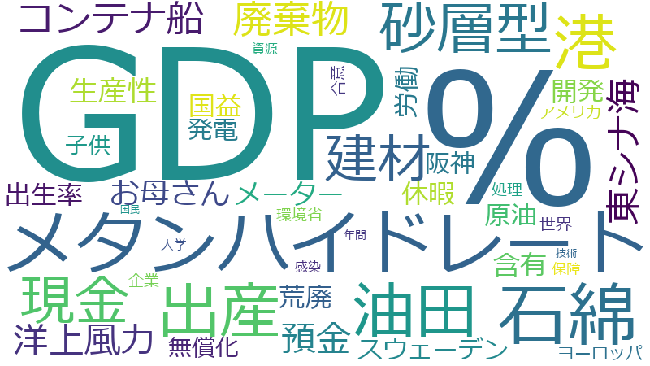

神谷昇

兼内閣府大臣政務官
開発、企業、世界、出産、港、労働、現金、生産性、子供、廃棄物、%、GDP、メタンハイドレート、石綿、お母さん、アメリカ、処理、預金、休暇、合意、国益、年間、洋上風力、発電、メーター、ヨーロッパ、国民、建材、東シナ海、油田、無償化、コンテナ船、スウェーデン、保障、出生率、原油、含有、大学、感染、技術、環境省、砂層型、荒廃、資源、阪神、トン、ドイツ、ドル、事業者、交通、作業、原因、原子力災害、史上、大型、大阪湾、奇跡、女性、家族、岸壁、工事、心、所得、投資、文化、日間、消費税、研究機関、経済、緊急事態、表層型、解体、解除、近海、逆子、飛散、PFOA、PFOS、アップ、エネルギー、エネ海域、グローバル、スタンダード、スリランカ、ゼロ、バース、フォーラム、レベル、一人当たり、予算、伝統、促進、側、内部留保、初産、利用法、動、合計、国際、地域
%、GDP、メタンハイドレート、石綿、油田、港、出産、砂層型、現金、建材、廃棄物、コンテナ船、東シナ海、洋上風力、預金、お母さん、生産性、メーター、含有、荒廃、休暇、国益、開発、原油、出生率、労働、スウェーデン、発電、阪神、無償化、子供、ヨーロッパ、世界、環境省、企業、処理、アメリカ、合意、保障、感染、資源、大学、年間、技術、国民
%
2019-02-27 account_balance
…を席巻し、ジャパン・アズ・ナンバーワン、そして、二十一世紀は日本のためにあると評されたものであります。年々一〇％の経済発展を続け、世界のＧＤＰの一五％を占めたり、国民一人当たりのＧＤＰが世界一になったり、そして、その中で…
…、そして、二十一世紀は日本のためにあると評されたものであります。年々一〇％の経済発展を続け、世界のＧＤＰの一五％を占めたり、国民一人当たりのＧＤＰが世界一になったり、そして、その中で、アメリカの背中が見えてきたと言われる…
…の政府がもっと有効に使ってあげましょう、私はそういう方策もありだというふうに思うんですね。なぜならば、消費税二％アップです。その前に、法人税が減免されて、小さくして、そしてもうけた。そのお金を皆さんに公平に分けるのではな…
…ためるんだったら、これに課税をして、そして、今、日本が何が足らないというところに投資すべきだというふうに思うんですね。金額は、私は〇・二％ぐらい現金の方にかけたらいいのかなと思ったりするのですが、どうでしょうか、大臣。…
…は思っていませんので。ただ、平成三十一年度、史上最大の税収と言われております。ところが、十月から消費税が一〇％に上がるわけで、これまでの最高は平成二年であります。ところが、あのときは消費税は三％でしたね。今回は途中から…
…ろが、十月から消費税が一〇％に上がるわけで、これまでの最高は平成二年であります。ところが、あのときは消費税は三％でしたね。今回は途中からで一〇％になる。そうすると、消費税を除いた税収というのは、もう平成二年からがたっと落…
…がるわけで、これまでの最高は平成二年であります。ところが、あのときは消費税は三％でしたね。今回は途中からで一〇％になる。そうすると、消費税を除いた税収というのは、もう平成二年からがたっと落ち込んでいるんです。やはり、先ほ…
…てくるわけであります。現金、預金分の課税は、そういう中でお尋ねをしたわけであります。私の税の考え方は、〇・二％ぐらいいただいてもいいんかな。そうすると、大体四千数百億円。これを何に使うか。やはり基礎的研究経費に一つは使…
…日本との差を広げていっているのが現実であります。そして、金額を見ますと、二〇一五年、アメリカはＧＤＰの二・八％、五千三十億ドルを研究開発に投入をしております。それにより、新技術、新見地が生まれて、実用化、商品化されてお…
2019-03-15 account_balance
…ーデンでは、子供の誕生直後、家族全員で過ごせるように、父親に、出産手当金として、出産後十日間について所得の八〇％を保障する。粋なことをしていますね、大臣。ここまでかというところをやっているんです。我が国でも、今のお話の…
…五・一％。逆に言うと、九五％がとっていないんですね。まあ、何と寂しい数字ですね、これは。もう全然出産の重さがわかっていないですね。私も逆子なんですね。ところが、こんなの遺伝するのかどうか知りませんけれども、うちの長男も…
…五・一％。逆に言うと、九五％がとっていないんですね。まあ、何と寂しい数字ですね、これは。もう全然出産の重さがわかっていないですね。私も逆子なんですね。ところが、こんなの遺伝するのかどうか知りませんけれども、うちの長男も…
…待問題であります。十四日の警察庁からの発表では、二〇一八年に摘発した児童虐待事件は千三百八十件、前年より二一％増でありまして、被害に遭った児童は千三百九十四人であります。過去最高であります。何とも痛ましい事件が続くこと…
2020-02-25 account_balance
…大臣、ありがとうございます。私もあの当時に住宅ローンを組んだんですけれども、一〇・五％でした。もう今は〇・何％、時代が変わりました。大臣、ひとつまたよろしくお願い申し上げます。最後に、「いのち輝く未来社会のデザイン」…
…大臣、ありがとうございます。私もあの当時に住宅ローンを組んだんですけれども、一〇・五％でした。もう今は〇・何％、時代が変わりました。大臣、ひとつまたよろしくお願い申し上げます。最後に、「いのち輝く未来社会のデザイン」…
2019-05-15 account_balance
…の二、それから石炭の半分のＣＯ2、非常に、いわば、今、二〇三〇年に向かって、日本として、二〇一三年と比べて二六％の温室効果ガス削減、これ、いいですね、成績が。このことをなぜ、もっともっと、砂層型は別として、表層型なんか、…
GDP
2019-02-27 account_balance
…ンバーワン、そして、二十一世紀は日本のためにあると評されたものであります。年々一〇％の経済発展を続け、世界のＧＤＰの一五％を占めたり、国民一人当たりのＧＤＰが世界一になったり、そして、その中で、アメリカの背中が見えてきた…
…にあると評されたものであります。年々一〇％の経済発展を続け、世界のＧＤＰの一五％を占めたり、国民一人当たりのＧＤＰが世界一になったり、そして、その中で、アメリカの背中が見えてきたと言われる時代もあったわけであります。と…
…ありがとうございます。私もそのようなことを思っております。それでは、続いて、ＧＤＰについてお伺いをします。これも、二〇一五年までの二十年間で、世界の平均は二・四倍になりましたね。中国なんか六倍ぐらいですね。ところが、…
…〇一五年までの二十年間で、世界の平均は二・四倍になりましたね。中国なんか六倍ぐらいですね。ところが、我が国のＧＤＰは、ここ一年で少し上がりましたけれども、二、三年前まで、世界でマイナスになったという唯一の国ですね。まさに…
今、労働生産性、そしてまたＧＤＰの伸びをお尋ねしました。そうしますと、労働生産性とＧＤＰの伸びはどういうふうに関連があるというふうに捉えておられますか。
…そうですね。ＯＥＣＤ加盟国の国民一人当たりのＧＤＰと労働生産性を見てみますと、労働生産性につきましては、二〇一七年、日本の一人当たりは八万四千ドルですね。これは加盟三十六カ国の中で二十一番目です。もう真ん中以下ですね。…
…七年、日本の一人当たりは八万四千ドルですね。これは加盟三十六カ国の中で二十一番目です。もう真ん中以下ですね。ＧＤＰにしますと、これは四万三千ドルちょっとですね。そして、三十六カ国中十七位。これは、世界平均の二・四倍としま…
…んどんどんと日本との差を広げていっているのが現実であります。そして、金額を見ますと、二〇一五年、アメリカはＧＤＰの二・八％、五千三十億ドルを研究開発に投入をしております。それにより、新技術、新見地が生まれて、実用化、商…
2020-02-25 account_balance
…、そういうことだというふうに思っております。それで、ちょっともう一つお聞きしたいのは、一九九〇年ごろの日米の国際競争力と世界ＧＤＰに占める日米の割合、その当時と最近と、どうなっているでしょうか、ちょっとお示しください。…
…円、中国は二兆円余りの規模であります。我が国は何と一千億余り。一件当たりの投資額は一桁違っております。日本のＧＤＰからすれば二兆円あってもおかしくないと言われております。一方、中小企業はこれほど労働生産性が低迷している…
…廃の中から、先人たち、大臣のお父様も含めてでありますが、もう驚異的な復興を果たしてきて、そして、世界に占めるＧＤＰもアメリカの背中に届くようになってきて、そして、そこでバブルがはじけて、今やもう四分の一です。今こそ、やは…
2019-05-15 account_balance
…だかといいますと、やはり一九九〇年代からですね。そうすると、もう三十年近くになっている。この三十年間、日本のＧＤＰはほとんど上昇していませんね。労働生産性も横ばいなんですね。まさにこの三十年近くは日本のいわば停滞の歴史な…
…すばらしいエネルギーの開発をいまだにやっている。こういうことが積み重なって労働生産性が上がらず、そして日本のＧＤＰは上がっていないんですね。私はその辺を、今この日本の国を挙げて、やはり反省すべきは反省しなければいけないと…
2019-11-13 account_balance
…おかれましては、この辺、しっかりと取り組んでいただきたいというふうに思っておるところであります。世界各国のＧＤＰの伸びを見てみますと、一九九五年から比較しますと、二十年余りでございますけれども、中国は何と十五倍以上の伸…
…均で考えますと、大体二・五倍であります。そうすると、二・五倍といいますと、日本でいいますと千二、三百兆円のＧＤＰがあるわけでありますが、日本は現状は五百五十兆でありますから、何と一・一倍、世界平均を大きく下回る、これは…
メタンハイドレート
2019-05-15 account_balance
…まして、まことにありがとうございます。私は、東シナ海での中国の油田開発、そしてまた、日本近海におけるメタンハイドレートにつきまして質問を申し上げたいと思います。よろしくお願いいたします。まず、東シナ海での中国の油田開…
…そのようなことをしなければいけないと私は思っておりますよ。油田というのはつながっているんではないか。メタンハイドレートみたいに固体であったら別なんですが、これはつながっているん違うか。そうすると、中国側で油田を掘ってそ…
…おりますので、ひとつまたよろしくお願いをしたいと思います。引き続きまして、燃える氷と言われておりますメタンハイドレートについて質問を申し上げます。二つに分けまして、砂層型、表層型がありまして、日本は砂層型を先行して開…
…す。そして、今、ここでちょっとお聞きしたいんですが、石油があります、石炭があります、ＬＮＧ、それからメタンハイドレート、いわば燃料があるわけでございますけれども、燃焼時の二酸化炭素排出について、その辺、ちょっとお示しを…
…ありがとうございました。今の御答弁を聞きますと、メタンハイドレート、石油の三分の二、それから石炭の半分のＣＯ2、非常に、いわば、今、二〇三〇年に向かって、日本として、二〇一三年と比べて二六％の温室効果ガス削減、これ、い…
…このメタンハイドレートにつきましてはいつごろから開発が進んだかといいますと、やはり一九九〇年代からですね。そうすると、もう三十年近くになっている。この三十年間、日本のＧＤＰはほとんど上昇していませんね。労働生産性も横ばい…
…り反省すべきは反省しなければいけないと思いますよ。そういうところからいいますと、いわば日本の近海にはメタンハイドレート、そして東シナ海には原油、そしてまた貴重資源、金属、いっぱいあるんですよ、日本に。それを遅々として開…
…ぎ込んで開発して、そして、資源小国と言われている日本から脱却する必要があるんではないんですか。いわばメタンハイドレート等の海洋エネルギー、資源の開発は、我が国の国益にとって極めて重要な政策であるというふうに思っておりま…
…大臣、いつもながら本当によい答弁をいただきまして、ありがとうございます。メタンハイドレート、これだけ炭酸ガスの排出が少ないすばらしいエネルギーであって、それから日本近海にたくさんある。これを利用しなければ何をするのかと…
石綿
2021-03-09 account_balance
…要な役割でございます、環境に由来する健康被害の未然防止のため、全ての建築物等の解体、改造、補修工事において、石綿の飛散防止を徹底することでございます。改正のポイントは主に四点ございまして、まず一つ目は、石綿含有建材が使…
…事において、石綿の飛散防止を徹底することでございます。改正のポイントは主に四点ございまして、まず一つ目は、石綿含有建材が使われた建築物等の解体等工事について、石綿の飛散が相対的に少ない石綿含有成形板、いわゆるレベル３建…
…。改正のポイントは主に四点ございまして、まず一つ目は、石綿含有建材が使われた建築物等の解体等工事について、石綿の飛散が相対的に少ない石綿含有成形板、いわゆるレベル３建材も含めて、全ての石綿含有建材を規制の対象とすること…
…点ございまして、まず一つ目は、石綿含有建材が使われた建築物等の解体等工事について、石綿の飛散が相対的に少ない石綿含有成形板、いわゆるレベル３建材も含めて、全ての石綿含有建材を規制の対象とすることでございます。二つ目は、…
…建築物等の解体等工事について、石綿の飛散が相対的に少ない石綿含有成形板、いわゆるレベル３建材も含めて、全ての石綿含有建材を規制の対象とすることでございます。二つ目は、石綿含有建材がないか解体等工事の前に調査する方法を明…
…含有成形板、いわゆるレベル３建材も含めて、全ての石綿含有建材を規制の対象とすることでございます。二つ目は、石綿含有建材がないか解体等工事の前に調査する方法を明確化し、その結果を都道府県等に報告することを義務づけ、不適切…
…その結果を都道府県等に報告することを義務づけ、不適切な調査を防止すること。三点目は、隔離等をせずに吹きつけ石綿等、いわゆるレベル１、レベル２建材の除去作業を行うという違反行為に対する直接罰創設によりまして、作業時の飛散…
…材の除去作業を行うという違反行為に対する直接罰創設によりまして、作業時の飛散を防止すること。そして最後に、石綿含有建材の除去作業についての記録を保存するとともに、発注者へ報告することを義務づけ、不適切な除去作業を防止す…
…材の除去作業についての記録を保存するとともに、発注者へ報告することを義務づけ、不適切な除去作業を防止することでございます。本改正によりまして、全ての建築物等の解体等工事について、石綿の飛散防止の徹底を図ってまいります。…
油田
2019-05-15 account_balance
…ございます。きょうは、質問の機会をいただきまして、まことにありがとうございます。私は、東シナ海での中国の油田開発、そしてまた、日本近海におけるメタンハイドレートにつきまして質問を申し上げたいと思います。よろしくお願い…
…ンハイドレートにつきまして質問を申し上げたいと思います。よろしくお願いいたします。まず、東シナ海での中国の油田開発の歴史でございますけれども、この歴史は一九九〇年代から始まったと言われておりますけれども、まずこの経過に…
…ですか。私は、大変この件について大きな疑問を感じております。話合いする、話合いする、その中で相手は一方的に油田を開発していっているんですよ。そうしたら、それをとめる、もうしない、話がつくまでしないとか、そういう約束もで…
…のは永遠に画定しませんよ。その中でこれが進んでいく。そしてまた、一九七〇年ぐらいから、この辺に、東シナ海に油田があるんではないかということで、中国は日本に比べて早く手を打っているんですね。日本はもう見ているだけ。こんな…
…っているんですね。日本はもう見ているだけ。こんな現状で日本の国益が守られるか。やはり日本も、さっと、対抗して油田を開発するとか、あるいはそのようなことをしなければいけないと私は思っておりますよ。油田というのはつながって…
…も、さっと、対抗して油田を開発するとか、あるいはそのようなことをしなければいけないと私は思っておりますよ。油田というのはつながっているんではないか。メタンハイドレートみたいに固体であったら別なんですが、これはつながって…
…か。メタンハイドレートみたいに固体であったら別なんですが、これはつながっているん違うか。そうすると、中国側で油田を掘ってそれを吸い取ると、日本の資源もとられているん違う、そういう懸念をするんですが、それについてはどうです…
…求めている。いろいろと行動していただいているということはわかりますね。国民から見れば、東シナ海の油田開発は一方的に中国のやりたい放題、そういうふうに国民は見ていますよ。日本の国益が大きく阻害されているというふうに思って…
…る、何なりする。しかし、結果は全然出ておりませんよね。政治というのはやはり結果ですよ。これから結果、例えば、この二〇〇八年の日中合意、それが、言ったら進展するまで油田の開発をとめるとか、そういう強い抗議はなさいましたか。…
港
2019-11-13 account_balance
…ます。自由民主党の神谷昇でございます。本日は、発言の機会を賜りまして、まことにありがとうございます。私は、港湾法の一部を改正する法律案につきまして質問を申し上げたいと思います。洋上風力発電は、我が国の再エネ比率を高…
…ります。再エネ海域利用法の運用によりまして、今後、我が国でも洋上風力発電の導入が加速されるというふうに思っております。現状と、海洋再生可能エネルギー発電設備等拠点港湾制度の期待度と効果についてお尋ねをしたいと思います。…
…て、今後、洋上風力発電の促進のためには、今おっしゃったような基地制度が重要であります。また、再エネ海域利用法と港湾法の運用をしっかりと行っていただいて、そして民間の方の導入を一層促進しながら、ヨーロッパに追いついていって…
…ことは、やはり、我が国としてパリ協定を守っていく上でも非常に重要な課題であるというふうに認識しておりますので、港湾局長におかれましては、この辺、しっかりと取り組んでいただきたいというふうに思っておるところであります。世…
…ンダードを考えながら、大胆に交通インフラ整備をすべきときであろうと考えております。我が国でも国際コンテナ戦略港湾づくり等に取り組んでおりますけれども、しかし、近年、コンテナ船の大型化が予想以上に進んでいる中で、我が国の…
…こっているかといいますと、北米、欧州航路で国際基幹航路の絞り込みが行われている中で、国際基幹航路の我が国への寄港便数が減少しておりまして、これはまさに危機的状況となっています。上海、青島、釜山、シンガポール等アジアの主…
…便数が減少しておりまして、これはまさに危機的状況となっています。上海、青島、釜山、シンガポール等アジアの主要港で、二十万トンクラスで、一隻で二万ＴＥＵクラスの大型コンテナ船がばんばんと入港している中を、日本は今後どう対…
…釜山、シンガポール等アジアの主要港で、二十万トンクラスで、一隻で二万ＴＥＵクラスの大型コンテナ船がばんばんと入港している中を、日本は今後どう対応していくかが非常に重要であります。横浜港ではマイナス十八メーター岸壁が一バ…
…クラスの大型コンテナ船がばんばんと入港している中を、日本は今後どう対応していくかが非常に重要であります。横浜港ではマイナス十八メーター岸壁が一バースございますけれども、同じ国際戦略港湾の阪神港ではいまだマイナス十八メー…
…ていくかが非常に重要であります。横浜港ではマイナス十八メーター岸壁が一バースございますけれども、同じ国際戦略港湾の阪神港ではいまだマイナス十八メーター岸壁ができておりません。そこで、早急に阪神港にもマイナス十八メータ…
…非常に重要であります。横浜港ではマイナス十八メーター岸壁が一バースございますけれども、同じ国際戦略港湾の阪神港ではいまだマイナス十八メーター岸壁ができておりません。そこで、早急に阪神港にもマイナス十八メーター岸壁をつ…
…すけれども、同じ国際戦略港湾の阪神港ではいまだマイナス十八メーター岸壁ができておりません。そこで、早急に阪神港にもマイナス十八メーター岸壁をつくって、東と西で大型コンテナ船を受け入れる、そのための機能強化が必要であると…
…もとりまして、一九八四年、あれから三十四年たちました。あの一九八四年のときには何ら名前が載っていなかった中国の港が、ベストテンにもうメジロ押しであります。それだけ中国の経済成長を、発展を裏づけている。大臣、やはり、泉大…
…もう今二十一万トンです。世界の大型化は、我々が予想するよりもはるかに大きくなっている。そうしますと、船が先か港が先か、これはもう、そして取り扱う荷物が、集めるのがどうか、そういう前に、やはり、いらっしゃいという体制を整…
…生産性革命に取り組んでいるところでございますけれども、中小企業の生産性がここ二十数年、上がっておりません。阪神港におきましても、外来トレーラーによる交通渋滞が日常化しております。原因は、コンテナをとりに来たトレーラーが何…
…テナをとりに来たトレーラーが何時間も待たされるからであります。今後、大水深バースが整備され大型コンテナ船の寄港でコンテナ取扱量がふえると、ますます交通渋滞がひどくなると思いますけれども、この早急な対策について国土交通省…
…きがあるので、早急にひとつ対策を立てて実行していただきたい。大阪湾には、ちょうど私の住んでいるところ、堺泉北港がございます。ここは、中古車の輸出港としては日本有数でありまして、また全国的に見ますと十一位の取扱いの貨物量…
…て実行していただきたい。大阪湾には、ちょうど私の住んでいるところ、堺泉北港がございます。ここは、中古車の輸出港としては日本有数でありまして、また全国的に見ますと十一位の取扱いの貨物量となっております。阪神・淡路大震災で…
…しては日本有数でありまして、また全国的に見ますと十一位の取扱いの貨物量となっております。阪神・淡路大震災で神戸港が使用不可能なときに、かわりに大きくその存在価値を示したわけであります。大阪湾にあって、神戸港、阪神港と今…
…路大震災で神戸港が使用不可能なときに、かわりに大きくその存在価値を示したわけであります。大阪湾にあって、神戸港、阪神港と今後一層連携をさせて、大阪湾への貨物の集積を一層図るためにも、この堺泉北港の機能強化が極めて大事で…
…で神戸港が使用不可能なときに、かわりに大きくその存在価値を示したわけであります。大阪湾にあって、神戸港、阪神港と今後一層連携をさせて、大阪湾への貨物の集積を一層図るためにも、この堺泉北港の機能強化が極めて大事であります…
…存在価値を示したわけであります。大阪湾にあって、神戸港、阪神港と今後一層連携をさせて、大阪湾への貨物の集積を一層図るためにも、この堺泉北港の機能強化が極めて大事であります。この機能強化についてお尋ねをしたいと思います。…
…御答弁ありがとうございました。大阪湾には、阪南港も含めまして四つの港湾がございまして、国際的な港湾とかいろいろとあるんですけれども、この四つを今後一層連携させて、そしてまた、日本のこの辺の貨物の取扱量がふえるように、一…
…御答弁ありがとうございました。大阪湾には、阪南港も含めまして四つの港湾がございまして、国際的な港湾とかいろいろとあるんですけれども、この四つを今後一層連携させて、そしてまた、日本のこの辺の貨物の取扱量がふえるように、一…
…御答弁ありがとうございました。大阪湾には、阪南港も含めまして四つの港湾がございまして、国際的な港湾とかいろいろとあるんですけれども、この四つを今後一層連携させて、そしてまた、日本のこの辺の貨物の取扱量がふえるように、一…
出産
2019-03-15 account_balance
…そのこと以外でもいろいろと手当てをしていく必要があるというふうに思っています。その中で、まず、日本における出産前の休暇制度についてちょっとお尋ねをしたいというふうに思っております。フランスでは、六週間を上限といたしま…
…休暇制度についてちょっとお尋ねをしたいというふうに思っております。フランスでは、六週間を上限といたしまして出産前に休暇をとる権利保障がございまして、この休暇をとっている間は疾病保険金庫から所得保障がなされています。企業…
…り組んでおりますね。スウェーデンでも、産前には七週間の休業の権利が与えられています。これらの国においては、出産前だけで違いまして、出産後もいろいろとそういう手当てがなされているわけでございますけれども、それでは、我が国…
…ェーデンでも、産前には七週間の休業の権利が与えられています。これらの国においては、出産前だけで違いまして、出産後もいろいろとそういう手当てがなされているわけでございますけれども、それでは、我が国のその辺についてちょっと…
…ありがとうございます。我が国におきましても、出産前後についての施策はかなり進んでまいりました。しかし、今、御答弁をいただいておりまして、やはりフランスとかスウェーデンの制度に比べたら見劣りしますね。ですから、私は、先ほ…
…人も五人も家族がおりましたけれども、今は大体三人とか、そういう家族になっております。そうなってまいりますと、出産時における男性の役割が私は非常に高まってきているのではないかというふうに思っております。一緒に子供さんをつく…
…けですから、生まれるときも、一緒になって力を合わせて、やはり妻に寄り添って、そしてお互いの愛情を確かめながら出産を迎える、こういうことが理想ではないかというふうに思っているわけであります。国もその辺のところも非常に応援…
…得保障がもちろんなされるわけであります。スウェーデンでは、子供の誕生直後、家族全員で過ごせるように、父親に、出産手当金として、出産後十日間について所得の八〇％を保障する。粋なことをしていますね、大臣。ここまでかというとこ…
…されるわけであります。スウェーデンでは、子供の誕生直後、家族全員で過ごせるように、父親に、出産手当金として、出産後十日間について所得の八〇％を保障する。粋なことをしていますね、大臣。ここまでかというところをやっているんで…
…わかりにくいところがあるんですね。我が国でも、男性の育児休業とかいろいろとやっております。ところが、例えば出産前の半年から、いろいろ期間を決めていますね。ここはちょっと大事なんですね、最近は高齢初産が多いんですね。高…
…、四カ月ぐらいの間が非常に母体にとって危険な状態が続くんです。このときに、やはり男性が妻に寄り添って、そして出産を同じくして考える、こういうことが大事なんですね。ですから、そういうことから考えると、やはり今の説明ではち…
…五・一％。逆に言うと、九五％がとっていないんですね。まあ、何と寂しい数字ですね、これは。もう全然出産の重さがわかっていないですね。私も逆子なんですね。ところが、こんなの遺伝するのかどうか知りませんけれども、うちの長男も…
…は、大臣、そのときに、ああ男でよかったな、もう自分はこんだけ苦しい目をようせぬと思いました。それほどやはり出産というのは、女性にとっては命をかけてする仕事なんですよ。厚生労働省が、いろいろな省がありますけれども、そんな…
砂層型
2019-05-15 account_balance
…引き続きまして、燃える氷と言われておりますメタンハイドレートについて質問を申し上げます。二つに分けまして、砂層型、表層型がありまして、日本は砂層型を先行して開発していると聞いておりますけれども、その現状と問題点について…
…ておりますメタンハイドレートについて質問を申し上げます。二つに分けまして、砂層型、表層型がありまして、日本は砂層型を先行して開発していると聞いておりますけれども、その現状と問題点についてお示しをいただきたいと思います。…
…なかなか、砂層型につきましても開発が難しい、これはもう非常に困難な技術だというふうに思っております。その中でも、世界が、最先端の技術を持っているということで評価しておりますけれども、それにひとつ邁進をしていただきたいと思…
…として、二〇一三年と比べて二六％の温室効果ガス削減、これ、いいですね、成績が。このことをなぜ、もっともっと、砂層型は別として、表層型なんか、カニが歩いているところにぽんぽんあるんですよ。そして、これは資料ですけれども、大…
…になるんですよ、温室効果ガスだということで。そういうところもまだ研究が進んでいない。非常にこれも困った話かなというふうに思っております。そうしたら、今後の砂層型、表層型の開発スケジュールについてちょっと教えてください。…
現金
2019-02-27 account_balance
…背景に、我が国の企業の内部留保が最近急速に伸びてきております。二〇一七年で四百四十六兆円。まあ、すごい数字であります。そして、あわせて企業の現金、預金も伸びておるわけですが、この現金、預金の数値は幾らになっておりますか。…
…背景に、我が国の企業の内部留保が最近急速に伸びてきております。二〇一七年で四百四十六兆円。まあ、すごい数字であります。そして、あわせて企業の現金、預金も伸びておるわけですが、この現金、預金の数値は幾らになっておりますか。…
…円。この五年間でプラス百四十兆円の増加です。すごい、それだけ企業がもうかっている。そして、資産の部としては、現金、預金が二百二十兆円、すごい。ところが、世界の趨勢を見ておりますと、やはり利益剰余金をどういうふうに使って…
…と、やはり利益剰余金をどういうふうに使っているか、更に再投資をしていくのか。ところが、日本の場合は、ちょっと現金で持ち過ぎではないか、これはデータでもはっきり出ておりますね。やはり、現金、預金を、ため過ぎているこの現金…
…ところが、日本の場合は、ちょっと現金で持ち過ぎではないか、これはデータでもはっきり出ておりますね。やはり、現金、預金を、ため過ぎているこの現金、預金を設備投資に回してもらう、そして生産性向上や労働者の賃金アップに役立て…
…現金で持ち過ぎではないか、これはデータでもはっきり出ておりますね。やはり、現金、預金を、ため過ぎているこの現金、預金を設備投資に回してもらう、そして生産性向上や労働者の賃金アップに役立ててもらう、また、下請の企業に少し…
…請の企業に少しは手厚くしていただく、そのようにいろいろと方策があると思うんですけれども、ちょっと日本の場合は現金を持ち過ぎている。ですから、そういうことをもっと積極的にやってほしいと私も思うところであります。それで、内…
…ら、そういうことをもっと積極的にやってほしいと私も思うところであります。それで、内部留保、そしてまた資産の現金、預金がやはり年間何十兆と伸びていっているわけです。仮に、日本の企業が現金で持っているならば、それだったら、…
…それで、内部留保、そしてまた資産の現金、預金がやはり年間何十兆と伸びていっているわけです。仮に、日本の企業が現金で持っているならば、それだったら、政府にちょっといただいて、日本の政府がもっと有効に使ってあげましょう、私は…
…ためるんだったら、これに課税をして、そして、今、日本が何が足らないというところに投資すべきだというふうに思うんですね。金額は、私は〇・二％ぐらい現金の方にかけたらいいのかなと思ったりするのですが、どうでしょうか、大臣。…
…は、日本の大きな課題であります。最近、企業に対する法人税が減額されて、一方では、今御答弁いただいたように、現金、預金をため込んでいる。片や、国民に消費増税です。国民感覚からすれば、どないなってんねん、一体どないなってい…
…ってんねん、一体どないなっているんだ、我々のことを思ってくれてんか、そういう声が聞こえてくるわけであります。現金、預金分の課税は、そういう中でお尋ねをしたわけであります。私の税の考え方は、〇・二％ぐらいいただいてもいい…
2020-02-25 account_balance
…日本の、いびつな世界になってきているんです。私は、さきの世耕大臣にもちょっとお話ししたんですが、このうちの現金の一部、半分ぐらいが現金だと言われている、この現金の一部をベンチャーキャピタルに、国がお願いして出していただ…
…ってきているんです。私は、さきの世耕大臣にもちょっとお話ししたんですが、このうちの現金の一部、半分ぐらいが現金だと言われている、この現金の一部をベンチャーキャピタルに、国がお願いして出していただく、そういうことをするこ…
…、さきの世耕大臣にもちょっとお話ししたんですが、このうちの現金の一部、半分ぐらいが現金だと言われている、この現金の一部をベンチャーキャピタルに、国がお願いして出していただく、そういうことをすることによって、日本にお金を回…
建材
2021-03-09 account_balance
…て、石綿の飛散防止を徹底することでございます。改正のポイントは主に四点ございまして、まず一つ目は、石綿含有建材が使われた建築物等の解体等工事について、石綿の飛散が相対的に少ない石綿含有成形板、いわゆるレベル３建材も含め…
…綿含有建材が使われた建築物等の解体等工事について、石綿の飛散が相対的に少ない石綿含有成形板、いわゆるレベル３建材も含めて、全ての石綿含有建材を規制の対象とすることでございます。二つ目は、石綿含有建材がないか解体等工事の…
…の解体等工事について、石綿の飛散が相対的に少ない石綿含有成形板、いわゆるレベル３建材も含めて、全ての石綿含有建材を規制の対象とすることでございます。二つ目は、石綿含有建材がないか解体等工事の前に調査する方法を明確化し、…
…板、いわゆるレベル３建材も含めて、全ての石綿含有建材を規制の対象とすることでございます。二つ目は、石綿含有建材がないか解体等工事の前に調査する方法を明確化し、その結果を都道府県等に報告することを義務づけ、不適切な調査を…
…を義務づけ、不適切な調査を防止すること。三点目は、隔離等をせずに吹きつけ石綿等、いわゆるレベル１、レベル２建材の除去作業を行うという違反行為に対する直接罰創設によりまして、作業時の飛散を防止すること。そして最後に、石…
…作業を行うという違反行為に対する直接罰創設によりまして、作業時の飛散を防止すること。そして最後に、石綿含有建材の除去作業についての記録を保存するとともに、発注者へ報告することを義務づけ、不適切な除去作業を防止することで…
廃棄物
2021-03-22 account_balance
…お答えいたします。議員お示しのように、廃棄物を処理する従事者の方について感染を防止するということは極めて重要な施策であります。廃棄物の処理は、日々の国民の生活や経済活動を支える必要不可欠な社会インフラでございまして、廃…
…議員お示しのように、廃棄物を処理する従事者の方について感染を防止するということは極めて重要な施策であります。廃棄物の処理は、日々の国民の生活や経済活動を支える必要不可欠な社会インフラでございまして、廃棄物の処理に当たって…
…な施策であります。廃棄物の処理は、日々の国民の生活や経済活動を支える必要不可欠な社会インフラでございまして、廃棄物の処理に当たっては適切な感染防止対策が講じられなければなりません。具体的には、病院等から発生する感染性廃…
…棄物の処理に当たっては適切な感染防止対策が講じられなければなりません。具体的には、病院等から発生する感染性廃棄物につきましては、法令に規定された処理基準等に基づきまして、容器に密閉して排出される等の措置を講ずる、まあ密…
…講ずる、まあ密閉するわけですね、それでもう大丈夫だというふうに思っております。それから、自宅等から排出される廃棄物につきましては、ごみ袋をしっかりと縛って封をしていただくことが、あるいはごみ袋の空気を抜いていただいて出し…
…、あるいはごみ袋の空気を抜いていただいて出していただく、そういう対策をしているところであります。また、感染性廃棄物処理の従事者におきましても、防護服等の適切な着用をしまして、小まめな手洗いや手指消毒等の感染防止対策を講じ…
…いや手指消毒等の感染防止対策を講じることが必要であります。こうした注意事項につきまして、環境省では、感染性廃棄物の処理マニュアルの周知、廃棄物に関する新型コロナウイルス感染症対策ガイドラインの取りまとめ、公表、そして留…
…講じることが必要であります。こうした注意事項につきまして、環境省では、感染性廃棄物の処理マニュアルの周知、廃棄物に関する新型コロナウイルス感染症対策ガイドラインの取りまとめ、公表、そして留意点をまとめましたチラシや動画…
…など、適正処理に当たって必要な知見を周知してまいりました。今後も、引き続き感染防止対策を講じた上で、感染性廃棄物等が適正に処理されるとともに廃棄物処理体制が維持されますように、国内の感染拡大及び廃棄物処理の状況をしっか…
…を周知してまいりました。今後も、引き続き感染防止対策を講じた上で、感染性廃棄物等が適正に処理されるとともに廃棄物処理体制が維持されますように、国内の感染拡大及び廃棄物処理の状況をしっかりと注視をしまして、必要な対策を的…
…続き感染防止対策を講じた上で、感染性廃棄物等が適正に処理されるとともに廃棄物処理体制が維持されますように、国内の感染拡大及び廃棄物処理の状況をしっかりと注視をしまして、必要な対策を的確に講じてまいりたいと存じております。…
コンテナ船
2019-11-13 account_balance
…ろうと考えております。我が国でも国際コンテナ戦略港湾づくり等に取り組んでおりますけれども、しかし、近年、コンテナ船の大型化が予想以上に進んでいる中で、我が国の大水深バースの建設がついていっていない、すなわち世界のグロー…
…ます。上海、青島、釜山、シンガポール等アジアの主要港で、二十万トンクラスで、一隻で二万ＴＥＵクラスの大型コンテナ船がばんばんと入港している中を、日本は今後どう対応していくかが非常に重要であります。横浜港ではマイナス十…
…メーター岸壁ができておりません。そこで、早急に阪神港にもマイナス十八メーター岸壁をつくって、東と西で大型コンテナ船を受け入れる、そのための機能強化が必要であると考えております。グローバルスタンダード化の観点からもお尋ね…
…ナス十二メーター岸壁がありまして、これを十四メーターにしようと。そのときに、十四メーターにすれば五万トンのコンテナ船が来るな、まあ、五、六万トンでもう大型は終わりかな、その当時はそんな話やったんです。ところが、何と、どん…
…因は、コンテナをとりに来たトレーラーが何時間も待たされるからであります。今後、大水深バースが整備され大型コンテナ船の寄港でコンテナ取扱量がふえると、ますます交通渋滞がひどくなると思いますけれども、この早急な対策について…
東シナ海
2019-05-15 account_balance
…民主党の神谷昇でございます。きょうは、質問の機会をいただきまして、まことにありがとうございます。私は、東シナ海での中国の油田開発、そしてまた、日本近海におけるメタンハイドレートにつきまして質問を申し上げたいと思います…
…近海におけるメタンハイドレートにつきまして質問を申し上げたいと思います。よろしくお願いいたします。まず、東シナ海での中国の油田開発の歴史でございますけれども、この歴史は一九九〇年代から始まったと言われておりますけれども…
…、こんなのは永遠に画定しませんよ。その中でこれが進んでいく。そしてまた、一九七〇年ぐらいから、この辺に、東シナ海に油田があるんではないかということで、中国は日本に比べて早く手を打っているんですね。日本はもう見ているだけ…
…求めている。いろいろと行動していただいているということはわかりますね。国民から見れば、東シナ海の油田開発は一方的に中国のやりたい放題、そういうふうに国民は見ていますよ。日本の国益が大きく阻害されているというふうに思って…
…ういうふうに国民は見ていますよ。日本の国益が大きく阻害されているというふうに思っております。そしてまた、東シナ海を始めとする日本近海における、日本の同意なしですね、排他的経済水域ですか、そこにもどんどんどんどんと海洋調…
…ければいけないと思いますよ。そういうところからいいますと、いわば日本の近海にはメタンハイドレート、そして東シナ海には原油、そしてまた貴重資源、金属、いっぱいあるんですよ、日本に。それを遅々として開発しようとしない。ここ…
洋上風力
2019-11-13 account_balance
…とにありがとうございます。私は、港湾法の一部を改正する法律案につきまして質問を申し上げたいと思います。洋上風力発電は、我が国の再エネ比率を高める上でも重要な電源でございますけれども、現状の導入量はほんのわずかでありま…
…昨年、導入のための再エネ海域利用法が成立し、本年四月から施行されております。今後、この法律の運用によって洋上風力発電の本格的導入が期待されておるところでございますけれども、円滑な導入のために、現状を正確に分析し、課題の…
…ンに行ったときがあります。ちょうどコペンハーゲンに飛行機が着陸しようとしたときに、洋上を見ますと何十という洋上風力発電が回っておりまして非常にびっくりしたことを覚えているところであります。先行するヨーロッパを参考にしなが…
…参考にしながら、いかに我が国でも導入促進をしていくかが大変重要であります。そこで、まず、ヨーロッパと日本の洋上風力発電の導入量について、それと我が国の洋上風力発電の優位性や課題について、国土交通省にお尋ねをいたします。…
…参考にしながら、いかに我が国でも導入促進をしていくかが大変重要であります。そこで、まず、ヨーロッパと日本の洋上風力発電の導入量について、それと我が国の洋上風力発電の優位性や課題について、国土交通省にお尋ねをいたします。…
…かし、これから頑張っていただきたいと思っております。再エネ海域利用法の運用によりまして、今後、我が国でも洋上風力発電の導入が加速されるというふうに思っております。現状と、海洋再生可能エネルギー発電設備等拠点港湾制度の期…
…年ヨーロッパにおくれている、そういうふうに考えております。しかし、いろいろな法律が整備されまして、今後、洋上風力発電の促進のためには、今おっしゃったような基地制度が重要であります。また、再エネ海域利用法と港湾法の運用を…
預金
2019-02-27 account_balance
…背景に、我が国の企業の内部留保が最近急速に伸びてきております。二〇一七年で四百四十六兆円。まあ、すごい数字であります。そして、あわせて企業の現金、預金も伸びておるわけですが、この現金、預金の数値は幾らになっておりますか。…
…背景に、我が国の企業の内部留保が最近急速に伸びてきております。二〇一七年で四百四十六兆円。まあ、すごい数字であります。そして、あわせて企業の現金、預金も伸びておるわけですが、この現金、預金の数値は幾らになっておりますか。…
…の五年間でプラス百四十兆円の増加です。すごい、それだけ企業がもうかっている。そして、資産の部としては、現金、預金が二百二十兆円、すごい。ところが、世界の趨勢を見ておりますと、やはり利益剰余金をどういうふうに使っているか…
…が、日本の場合は、ちょっと現金で持ち過ぎではないか、これはデータでもはっきり出ておりますね。やはり、現金、預金を、ため過ぎているこの現金、預金を設備投資に回してもらう、そして生産性向上や労働者の賃金アップに役立ててもら…
…持ち過ぎではないか、これはデータでもはっきり出ておりますね。やはり、現金、預金を、ため過ぎているこの現金、預金を設備投資に回してもらう、そして生産性向上や労働者の賃金アップに役立ててもらう、また、下請の企業に少しは手厚…
…ういうことをもっと積極的にやってほしいと私も思うところであります。それで、内部留保、そしてまた資産の現金、預金がやはり年間何十兆と伸びていっているわけです。仮に、日本の企業が現金で持っているならば、それだったら、政府に…
…本の大きな課題であります。最近、企業に対する法人税が減額されて、一方では、今御答弁いただいたように、現金、預金をため込んでいる。片や、国民に消費増税です。国民感覚からすれば、どないなってんねん、一体どないなっているんだ…
…ねん、一体どないなっているんだ、我々のことを思ってくれてんか、そういう声が聞こえてくるわけであります。現金、預金分の課税は、そういう中でお尋ねをしたわけであります。私の税の考え方は、〇・二％ぐらいいただいてもいいんかな…
お母さん
2019-03-15 account_balance
…かな、非常に危惧するわけであります。私も、市長の間にいろいろと御相談を受けて、いろいろ話をしました。あるお母さんの話であります。子供が荒れて、ぐれて、もう手がつけられない、どうしようかな、途方に暮れておって、専門家に…
…れて、もう手がつけられない、どうしようかな、途方に暮れておって、専門家に相談をしました。専門家は、いろいろお母さんの話を聞いて、お母さん、一歳までどうですか、二歳までどうですか、二歳までずっと子供と一緒に生活していました…
…ない、どうしようかな、途方に暮れておって、専門家に相談をしました。専門家は、いろいろお母さんの話を聞いて、お母さん、一歳までどうですか、二歳までどうですか、二歳までずっと子供と一緒に生活していました、ああ、それやったら心…
…手当てがないんですね。例えば、私は、三歳まで、あるいは二歳まで、一歳まで自分で見るねんと、働いていない人、お母さん、そういうところにはないわけでありまして、ちょっと不公平感もあるんですけれども、今後そういうことをひとつま…
…ティアで、大臣、私の家内が、十数年ぐらい前でしたかね、この指とまれといいまして、小さいお子さんを持っているお母さんに集まってもらいまして、お母さん同士で話をして、いろいろと情報交換するんですね。子供さんたちは、うちの家内…
…年ぐらい前でしたかね、この指とまれといいまして、小さいお子さんを持っているお母さんに集まってもらいまして、お母さん同士で話をして、いろいろと情報交換するんですね。子供さんたちは、うちの家内らボランティアが何人かで遊ぶんで…
…アが何人かで遊ぶんですね。そうすると、うちの家内なども子育てが終わっていますから、やはりうれしいんですね。お母さんはお母さん同士で情報交換するから、やはり一つ、心が、ストレスが解消して、それはよかった。ですから、国、市…
…で遊ぶんですね。そうすると、うちの家内なども子育てが終わっていますから、やはりうれしいんですね。お母さんはお母さん同士で情報交換するから、やはり一つ、心が、ストレスが解消して、それはよかった。ですから、国、市町村、そし…
生産性
2019-02-27 account_balance
…ど奇跡的に成長したにもかかわらず、ぴたっととまったまま今日まで至っておるところであります。そこで、まず労働生産性のお尋ねをしたいと思います。最近の二十年間を見ておりますと、我が国の労働生産性は横ばいであります。特に中…
…あります。そこで、まず労働生産性のお尋ねをしたいと思います。最近の二十年間を見ておりますと、我が国の労働生産性は横ばいであります。特に中小企業、サービス業は低下傾向にございますけれども、これをどのように捉えているのか…
今、労働生産性、そしてまたＧＤＰの伸びをお尋ねしました。そうしますと、労働生産性とＧＤＰの伸びはどういうふうに関連があるというふうに捉えておられますか。
…そうですね。ＯＥＣＤ加盟国の国民一人当たりのＧＤＰと労働生産性を見てみますと、労働生産性につきましては、二〇一七年、日本の一人当たりは八万四千ドルですね。これは加盟三十六カ国の中で二十一番目です。もう真ん中以下ですね。…
…そうですね。ＯＥＣＤ加盟国の国民一人当たりのＧＤＰと労働生産性を見てみますと、労働生産性につきましては、二〇一七年、日本の一人当たりは八万四千ドルですね。これは加盟三十六カ国の中で二十一番目です。もう真ん中以下ですね。…
…なわち、それぞれの時期において的確な施策は打ってこられたか。それを私は素直に疑問を持つわけであります。労働生産性の向上は、まさに国民の生活水準を引き上げる。そして今、日本の構造的労働不足に陥っていることを解消する。また…
…げる。そして今、日本の構造的労働不足に陥っていることを解消する。また働き方改革にもつながってくる。やはり労働生産性を上げることは、いろいろいいことがあるわけであります。ところが、低迷してきている。私は国会議員になってま…
…ほかの面でまだまだ足りない部分がありますから、これが問題かなというふうに思っております。特に、やはり、労働生産性と賃金というのはある程度私はオーバーラップしてくるのではないかというふうに思っておりまして、経産省からいた…
…れているのではないかというふうに私は考えるわけです。ですから、労働分配率を上げるためにやはりしっかりと労働生産性を更に上げて、そして、企業家がやはり国民の生活が楽になるようにそれをもう少し考えてもらう、そういうことが必…
…はっきり出ておりますね。やはり、現金、預金を、ため過ぎているこの現金、預金を設備投資に回してもらう、そして生産性向上や労働者の賃金アップに役立ててもらう、また、下請の企業に少しは手厚くしていただく、そのようにいろいろと…
…たい。それとベンチャーキャピタルだけに。ですから、今、世界の趨勢からいって、何を負けているかというと、労働生産性を上げるとかいろいろなことが、世界競争しておりますが、その中で、やはり研究機関がしっかりとして、そして、技…
2020-02-25 account_balance
…げて、本当に接近をしてきました。国際競争力が何と我が国の方が高くなったんですね。今や国際競争力は三十位、労働生産性はＯＥＣＤの平均以下、落ちたものですね。この辺を今後どうするか、経産省の腕の見せどころだというふうに思って…
…おります。日本のＧＤＰからすれば二兆円あってもおかしくないと言われております。一方、中小企業はこれほど労働生産性が低迷しているにもかかわらず、大企業では二倍以上の労働生産性。最近では内部留保がどっとふえてきておりまして…
…言われております。一方、中小企業はこれほど労働生産性が低迷しているにもかかわらず、大企業では二倍以上の労働生産性。最近では内部留保がどっとふえてきておりまして、去年、予想でございますけれども、金融、保険を入れると六百兆…
2019-05-15 account_balance
…ですね。そうすると、もう三十年近くになっている。この三十年間、日本のＧＤＰはほとんど上昇していませんね。労働生産性も横ばいなんですね。まさにこの三十年近くは日本のいわば停滞の歴史なんです。その一つが、これだけ今、先ほど…
…の半分のＣＯ2の排出量、こんなすばらしいエネルギーの開発をいまだにやっている。こういうことが積み重なって労働生産性が上がらず、そして日本のＧＤＰは上がっていないんですね。私はその辺を、今この日本の国を挙げて、やはり反省す…
2019-11-13 account_balance
…すので、ひとつ、それらを実行するために予算措置を頑張っていただきたいというふうに思っております。我が国では生産性革命に取り組んでいるところでございますけれども、中小企業の生産性がここ二十数年、上がっておりません。阪神港…
…たいというふうに思っております。我が国では生産性革命に取り組んでいるところでございますけれども、中小企業の生産性がここ二十数年、上がっておりません。阪神港におきましても、外来トレーラーによる交通渋滞が日常化しております…
メーター
2019-11-13 account_balance
…がばんばんと入港している中を、日本は今後どう対応していくかが非常に重要であります。横浜港ではマイナス十八メーター岸壁が一バースございますけれども、同じ国際戦略港湾の阪神港ではいまだマイナス十八メーター岸壁ができておりま…
…港ではマイナス十八メーター岸壁が一バースございますけれども、同じ国際戦略港湾の阪神港ではいまだマイナス十八メーター岸壁ができておりません。そこで、早急に阪神港にもマイナス十八メーター岸壁をつくって、東と西で大型コンテナ…
…略港湾の阪神港ではいまだマイナス十八メーター岸壁ができておりません。そこで、早急に阪神港にもマイナス十八メーター岸壁をつくって、東と西で大型コンテナ船を受け入れる、そのための機能強化が必要であると考えております。グロー…
…け中国の経済成長を、発展を裏づけている。大臣、やはり、泉大津の助松、私の裏なんですけれども、マイナス十二メーター岸壁がありまして、これを十四メーターにしようと。そのときに、十四メーターにすれば五万トンのコンテナ船が来る…
…る。大臣、やはり、泉大津の助松、私の裏なんですけれども、マイナス十二メーター岸壁がありまして、これを十四メーターにしようと。そのときに、十四メーターにすれば五万トンのコンテナ船が来るな、まあ、五、六万トンでもう大型は終…
…の裏なんですけれども、マイナス十二メーター岸壁がありまして、これを十四メーターにしようと。そのときに、十四メーターにすれば五万トンのコンテナ船が来るな、まあ、五、六万トンでもう大型は終わりかな、その当時はそんな話やったん…
含有
2021-03-09 account_balance
…おいて、石綿の飛散防止を徹底することでございます。改正のポイントは主に四点ございまして、まず一つ目は、石綿含有建材が使われた建築物等の解体等工事について、石綿の飛散が相対的に少ない石綿含有成形板、いわゆるレベル３建材も…
…ざいまして、まず一つ目は、石綿含有建材が使われた建築物等の解体等工事について、石綿の飛散が相対的に少ない石綿含有成形板、いわゆるレベル３建材も含めて、全ての石綿含有建材を規制の対象とすることでございます。二つ目は、石綿…
…物等の解体等工事について、石綿の飛散が相対的に少ない石綿含有成形板、いわゆるレベル３建材も含めて、全ての石綿含有建材を規制の対象とすることでございます。二つ目は、石綿含有建材がないか解体等工事の前に調査する方法を明確化…
…成形板、いわゆるレベル３建材も含めて、全ての石綿含有建材を規制の対象とすることでございます。二つ目は、石綿含有建材がないか解体等工事の前に調査する方法を明確化し、その結果を都道府県等に報告することを義務づけ、不適切な調…
…除去作業を行うという違反行為に対する直接罰創設によりまして、作業時の飛散を防止すること。そして最後に、石綿含有建材の除去作業についての記録を保存するとともに、発注者へ報告することを義務づけ、不適切な除去作業を防止するこ…
荒廃
2020-02-25 account_balance
…たきのめされて、三百十万人のとうとい犠牲をもたらしながら敗戦を迎えたわけであります。しかし、先人たちは、あの荒廃した日本から血のにじむ思いをしながら復興に取り組んでまいりました。歴史の中で、政治の中でも、梶山大臣のお父様…
…二十一世紀は日本の時代だと世界から言われたときに、急激にあのバブル経済が崩壊したわけであります。あの戦後の荒廃の中から先人たちが血のにじむ思いで一九九〇年まで頑張ってこられて世界に冠たる日本をつくって、そしてその後が、…
…一九九〇年代は、あの荒廃した中から日本はアメリカを追い上げて、本当に接近をしてきました。国際競争力が何と我が国の方が高くなったんですね。今や国際競争力は三十位、労働生産性はＯＥＣＤの平均以下、落ちたものですね。この辺を今…
…てきているんですよ。そういうところで、経産省は、今、梶山大臣を中心に、日本復興のために、大臣のお父様があの荒廃した日本を復興させたように、この経済の復興のために、私は大臣に獅子奮迅のお働きを御期待をしているところであり…
…ったって何もこたえませんから、よろしくお願いします。大臣、今までいろいろ申し上げてまいりました。戦後、あの荒廃の中から、先人たち、大臣のお父様も含めてでありますが、もう驚異的な復興を果たしてきて、そして、世界に占めるＧ…
休暇
2019-03-15 account_balance
…以外でもいろいろと手当てをしていく必要があるというふうに思っています。その中で、まず、日本における出産前の休暇制度についてちょっとお尋ねをしたいというふうに思っております。フランスでは、六週間を上限といたしまして出産…
…についてちょっとお尋ねをしたいというふうに思っております。フランスでは、六週間を上限といたしまして出産前に休暇をとる権利保障がございまして、この休暇をとっている間は疾病保険金庫から所得保障がなされています。企業でも、労…
…うに思っております。フランスでは、六週間を上限といたしまして出産前に休暇をとる権利保障がございまして、この休暇をとっている間は疾病保険金庫から所得保障がなされています。企業でも、労働者の休暇中の所得保障額がそれまでの賃…
…権利保障がございまして、この休暇をとっている間は疾病保険金庫から所得保障がなされています。企業でも、労働者の休暇中の所得保障額がそれまでの賃金を下回るときには不足分を補填するという企業が大半でございまして、やはり官民挙げ…
…国もその辺のところも非常に応援しておりまして、フランスでは、子供の生まれたときに、連続、何と十一日間の父親休暇があるんですね。びっくりしました。家族休暇と合わせると、何と十四日間、二週間とれるんですね。休暇中は疾病金庫…
…して、フランスでは、子供の生まれたときに、連続、何と十一日間の父親休暇があるんですね。びっくりしました。家族休暇と合わせると、何と十四日間、二週間とれるんですね。休暇中は疾病金庫から所得保障がもちろんなされるわけでありま…
…一日間の父親休暇があるんですね。びっくりしました。家族休暇と合わせると、何と十四日間、二週間とれるんですね。休暇中は疾病金庫から所得保障がもちろんなされるわけであります。スウェーデンでは、子供の誕生直後、家族全員で過ごせ…
国益
2019-05-15 account_balance
…をつけてどんどんどんどん一方的にして、いわばやりたい放題されている。それについて抗議はするけれども何ら日本の国益につながっていないことが、今の御説明でわかったわけであります。そうすれば、もう一度聞きたいんですが、二〇〇…
…して、二〇一八年にまたその話を進めていく、いわば同じことの繰り返しであります。これが、果たして外務省は日本の国益を守っていっていると言えるんですか。私は、大変この件について大きな疑問を感じております。話合いする、話合い…
…ら、それをとめる、もうしない、話がつくまでしないとか、そういう約束もできていないんですね。そんなことで日本の国益が守られるのか。そして、境界が画定するまで、こんなのは永遠に画定しませんよ。その中でこれが進んでいく。そし…
…ないかということで、中国は日本に比べて早く手を打っているんですね。日本はもう見ているだけ。こんな現状で日本の国益が守られるか。やはり日本も、さっと、対抗して油田を開発するとか、あるいはそのようなことをしなければいけないと…
…ったらかし。そんなことで、日本の側の原油がどんどんどんどんと吸い取られている可能性は否定できませんよ、これで国益を守れるんですかね。我々国民からすれば、どんどんどんどんと開発していく。そうすると、それはやはり原油がとれ…
…。国民から見れば、東シナ海の油田開発は一方的に中国のやりたい放題、そういうふうに国民は見ていますよ。日本の国益が大きく阻害されているというふうに思っております。そしてまた、東シナ海を始めとする日本近海における、日本の…
…ら脱却する必要があるんではないんですか。いわばメタンハイドレート等の海洋エネルギー、資源の開発は、我が国の国益にとって極めて重要な政策であるというふうに思っておりますが、宮腰大臣、お待たせしました、大臣の御見解をお聞か…
開発
2019-05-15 account_balance
…います。きょうは、質問の機会をいただきまして、まことにありがとうございます。私は、東シナ海での中国の油田開発、そしてまた、日本近海におけるメタンハイドレートにつきまして質問を申し上げたいと思います。よろしくお願いいた…
…イドレートにつきまして質問を申し上げたいと思います。よろしくお願いいたします。まず、東シナ海での中国の油田開発の歴史でございますけれども、この歴史は一九九〇年代から始まったと言われておりますけれども、まずこの経過につい…
…今、御説明をいただきました。かなり前から開発して、そして二〇〇八年に日中合意がされた。その後も、あること、いちゃもんをつけてどんどんどんどん一方的にして、いわばやりたい放題されている。それについて抗議はするけれども何ら…
…二〇〇八年六月に合意をされた、その後も、あることから一方的に開発を進めていく、そして、二〇一八年にまたその話を進めていく、いわば同じことの繰り返しであります。これが、果たして外務省は日本の国益を守っていっていると言えるん…
…。私は、大変この件について大きな疑問を感じております。話合いする、話合いする、その中で相手は一方的に油田を開発していっているんですよ。そうしたら、それをとめる、もうしない、話がつくまでしないとか、そういう約束もできてい…
…るんですね。日本はもう見ているだけ。こんな現状で日本の国益が守られるか。やはり日本も、さっと、対抗して油田を開発するとか、あるいはそのようなことをしなければいけないと私は思っておりますよ。油田というのはつながっているん…
…取られている可能性は否定できませんよ、これで国益を守れるんですかね。我々国民からすれば、どんどんどんどんと開発していく。そうすると、それはやはり原油がとれるからどんどん開発していっている。その原油がとれているところは、…
…かね。我々国民からすれば、どんどんどんどんと開発していく。そうすると、それはやはり原油がとれるからどんどん開発していっている。その原油がとれているところは、向こうの報告でありますけれども、それは本当かどうかわかりません…
…ながら、どんどんどんどんそれを破棄して、中国側は一つ一つふえていくんですね。そうすると、日本も、国民感情からすると、そんな見ていないで日本も開発したらどうですか、こういう単純な疑問が発生すると思うんですが、いかがですか。…
…求めている。いろいろと行動していただいているということはわかりますね。国民から見れば、東シナ海の油田開発は一方的に中国のやりたい放題、そういうふうに国民は見ていますよ。日本の国益が大きく阻害されているというふうに思って…
…る、何なりする。しかし、結果は全然出ておりませんよね。政治というのはやはり結果ですよ。これから結果、例えば、この二〇〇八年の日中合意、それが、言ったら進展するまで油田の開発をとめるとか、そういう強い抗議はなさいましたか。…
…イレベルフォーラムが開催されております。二回目であります。その中で、いわば中国が中心となっていろいろな国の開発をお手伝いするということでありますから、それはいいなというふうに皆さん思っておりました。ところが、過日、ス…
…の四月のハイレベルフォーラムには、スリランカは欠席しておりますね。中国は、一帯一路で、そしてこれから世界の開発をして世界をよくするという思惑と裏腹に、こういうことが現実にわかってきた。マレーシアでもそうですね。高速鉄道…
…きておりますよね。中国では、もう世界は話にならぬということは中国も認識しまして、ようやく中国は、日本と共同で開発することによって信用度をつける、そういうふうに今、これまでやりたい放題していた中国が日本に近づいてきているん…
…ておりますメタンハイドレートについて質問を申し上げます。二つに分けまして、砂層型、表層型がありまして、日本は砂層型を先行して開発していると聞いておりますけれども、その現状と問題点についてお示しをいただきたいと思います。…
…なかなか、砂層型につきましても開発が難しい、これはもう非常に困難な技術だというふうに思っております。その中でも、世界が、最先端の技術を持っているということで評価しておりますけれども、それにひとつ邁進をしていただきたいと思…
…になるんですよ、温室効果ガスだということで。そういうところもまだ研究が進んでいない。非常にこれも困った話かなというふうに思っております。そうしたら、今後の砂層型、表層型の開発スケジュールについてちょっと教えてください。…
…このメタンハイドレートにつきましてはいつごろから開発が進んだかといいますと、やはり一九九〇年代からですね。そうすると、もう三十年近くになっている。この三十年間、日本のＧＤＰはほとんど上昇していませんね。労働生産性も横ばい…
…つが、これだけ今、先ほどお聞きした、石油の三分の二、石炭の半分のＣＯ2の排出量、こんなすばらしいエネルギーの開発をいまだにやっている。こういうことが積み重なって労働生産性が上がらず、そして日本のＧＤＰは上がっていないんで…
…イドレート、そして東シナ海には原油、そしてまた貴重資源、金属、いっぱいあるんですよ、日本に。それを遅々として開発しようとしない。ここにだあっとお金をつぎ込んで開発して、そして、資源小国と言われている日本から脱却する必要が…
…資源、金属、いっぱいあるんですよ、日本に。それを遅々として開発しようとしない。ここにだあっとお金をつぎ込んで開発して、そして、資源小国と言われている日本から脱却する必要があるんではないんですか。いわばメタンハイドレート…
…われている日本から脱却する必要があるんではないんですか。いわばメタンハイドレート等の海洋エネルギー、資源の開発は、我が国の国益にとって極めて重要な政策であるというふうに思っておりますが、宮腰大臣、お待たせしました、大臣…
…られるんですね。そう簡単にいくかどうかは別としまして、やはり、資源のない国でこのすばらしいエネルギーをどう開発、これは日本のいわば成長産業の戦略の一つやと思いますし、そしてまた二〇三〇年の地球温暖化対策に資することだと…
原油
2019-05-15 account_balance
…も、その辺のきちっとした調査はされているんですか、していないですよね、ほったらかし。そんなことで、日本の側の原油がどんどんどんどんと吸い取られている可能性は否定できませんよ、これで国益を守れるんですかね。我々国民からす…
…これで国益を守れるんですかね。我々国民からすれば、どんどんどんどんと開発していく。そうすると、それはやはり原油がとれるからどんどん開発していっている。その原油がとれているところは、向こうの報告でありますけれども、それは…
…ば、どんどんどんどんと開発していく。そうすると、それはやはり原油がとれるからどんどん開発していっている。その原油がとれているところは、向こうの報告でありますけれども、それは本当かどうかわかりませんね。どれだけの日本の原油…
…原油がとれているところは、向こうの報告でありますけれども、それは本当かどうかわかりませんね。どれだけの日本の原油がとれているか、それさえもわからない。その中で、約束をしながら、どんどんどんどんそれを破棄して、中国側は一つ…
…ないと思いますよ。そういうところからいいますと、いわば日本の近海にはメタンハイドレート、そして東シナ海には原油、そしてまた貴重資源、金属、いっぱいあるんですよ、日本に。それを遅々として開発しようとしない。ここにだあっと…
出生率
2019-03-15 account_balance
…国もようやく本格的な少子化対策がスタートしたと言っても過言ではないというふうに思っております。大臣、戦後の出生率を見ておりますと、一九四九年、昭和二十四年でございますけれども、何と二百六十九万六千六百三十八人生まれまし…
…ますと、一九四九年、昭和二十四年でございますけれども、何と二百六十九万六千六百三十八人生まれまして、合計特殊出生率は何と四・三二ですね。それがずっと落ち込んできまして、第二次ベビーブームの一九七三年、二百九万千九百六十三…
…がずっと落ち込んできまして、第二次ベビーブームの一九七三年、二百九万千九百六十三人が生まれて、これも合計特殊出生率が何と二・一四。そこからずっと落ち続けて、昨年は九十二万人強ぐらいでございますか、生まれたのは。もう何と一…
…・九二でございます。そして、スウェーデンが一・八五、アメリカが一・八二、イギリスが一・七九、これが日本の希望出生率一・八を大体クリアしております。そして、ドイツが一・五九、日本が、二〇一六年一・四四、それからまだわずかに…
…もあるんですけれども、今後そういうことをひとつまた御勘案いただきたいと思っております。この無償化で合計特殊出生率が向上することを期待しているところであります。やはり、今申し上げたように、各国でも国を挙げて、総出でいわば…
労働
2019-02-27 account_balance
…れほど奇跡的に成長したにもかかわらず、ぴたっととまったまま今日まで至っておるところであります。そこで、まず労働生産性のお尋ねをしたいと思います。最近の二十年間を見ておりますと、我が国の労働生産性は横ばいであります。特…
…ろであります。そこで、まず労働生産性のお尋ねをしたいと思います。最近の二十年間を見ておりますと、我が国の労働生産性は横ばいであります。特に中小企業、サービス業は低下傾向にございますけれども、これをどのように捉えている…
今、労働生産性、そしてまたＧＤＰの伸びをお尋ねしました。そうしますと、労働生産性とＧＤＰの伸びはどういうふうに関連があるというふうに捉えておられますか。
…そうですね。ＯＥＣＤ加盟国の国民一人当たりのＧＤＰと労働生産性を見てみますと、労働生産性につきましては、二〇一七年、日本の一人当たりは八万四千ドルですね。これは加盟三十六カ国の中で二十一番目です。もう真ん中以下ですね。…
…そうですね。ＯＥＣＤ加盟国の国民一人当たりのＧＤＰと労働生産性を見てみますと、労働生産性につきましては、二〇一七年、日本の一人当たりは八万四千ドルですね。これは加盟三十六カ国の中で二十一番目です。もう真ん中以下ですね。…
…。すなわち、それぞれの時期において的確な施策は打ってこられたか。それを私は素直に疑問を持つわけであります。労働生産性の向上は、まさに国民の生活水準を引き上げる。そして今、日本の構造的労働不足に陥っていることを解消する。…
…直に疑問を持つわけであります。労働生産性の向上は、まさに国民の生活水準を引き上げる。そして今、日本の構造的労働不足に陥っていることを解消する。また働き方改革にもつながってくる。やはり労働生産性を上げることは、いろいろい…
…き上げる。そして今、日本の構造的労働不足に陥っていることを解消する。また働き方改革にもつながってくる。やはり労働生産性を上げることは、いろいろいいことがあるわけであります。ところが、低迷してきている。私は国会議員になっ…
…わけですから、ひとつその辺、腹をくくって頑張っていただきたいというふうに思っておるところであります。次に、労働分配率について質問をさせていただきます。資料がいろいろございまして、分母の違いによっていろいろとあるわけで…
…史上空前の景気そして収益と言われていますけれども、ここへ来ると、それが全く数字にもあらわれていないし、いわば労働者の人も余り実感がされていないんですね。そうすると、こういう、景気がいいにもかかわらずこれが停滞している。…
…このほかの面でまだまだ足りない部分がありますから、これが問題かなというふうに思っております。特に、やはり、労働生産性と賃金というのはある程度私はオーバーラップしてくるのではないかというふうに思っておりまして、経産省から…
…円とすれば、ドイツが百七十三円、ここにあらわれているのではないかというふうに私は考えるわけです。ですから、労働分配率を上げるためにやはりしっかりと労働生産性を更に上げて、そして、企業家がやはり国民の生活が楽になるように…
…らわれているのではないかというふうに私は考えるわけです。ですから、労働分配率を上げるためにやはりしっかりと労働生産性を更に上げて、そして、企業家がやはり国民の生活が楽になるようにそれをもう少し考えてもらう、そういうこと…
…おりますね。やはり、現金、預金を、ため過ぎているこの現金、預金を設備投資に回してもらう、そして生産性向上や労働者の賃金アップに役立ててもらう、また、下請の企業に少しは手厚くしていただく、そのようにいろいろと方策があると…
…だきたい。それとベンチャーキャピタルだけに。ですから、今、世界の趨勢からいって、何を負けているかというと、労働生産性を上げるとかいろいろなことが、世界競争しておりますが、その中で、やはり研究機関がしっかりとして、そして…
2020-02-25 account_balance
…い上げて、本当に接近をしてきました。国際競争力が何と我が国の方が高くなったんですね。今や国際競争力は三十位、労働生産性はＯＥＣＤの平均以下、落ちたものですね。この辺を今後どうするか、経産省の腕の見せどころだというふうに思…
…っております。日本のＧＤＰからすれば二兆円あってもおかしくないと言われております。一方、中小企業はこれほど労働生産性が低迷しているにもかかわらず、大企業では二倍以上の労働生産性。最近では内部留保がどっとふえてきておりま…
…いと言われております。一方、中小企業はこれほど労働生産性が低迷しているにもかかわらず、大企業では二倍以上の労働生産性。最近では内部留保がどっとふえてきておりまして、去年、予想でございますけれども、金融、保険を入れると六…
2019-05-15 account_balance
…からですね。そうすると、もう三十年近くになっている。この三十年間、日本のＧＤＰはほとんど上昇していませんね。労働生産性も横ばいなんですね。まさにこの三十年近くは日本のいわば停滞の歴史なんです。その一つが、これだけ今、先…
…石炭の半分のＣＯ2の排出量、こんなすばらしいエネルギーの開発をいまだにやっている。こういうことが積み重なって労働生産性が上がらず、そして日本のＧＤＰは上がっていないんですね。私はその辺を、今この日本の国を挙げて、やはり反…
スウェーデン
2019-03-15 account_balance
…世界の数字を見ていますと、二〇一六年の数字でございますけれども、フランスが一・九二でございます。そして、スウェーデンが一・八五、アメリカが一・八二、イギリスが一・七九、これが日本の希望出生率一・八を大体クリアしております…
…いついていけるのか、この施策で。この施策で追いついていければいいんですけれども、しかし、フランスにしてもスウェーデンにしても、まさに国家が血のにじむような努力をしていますね。無償化はもちろんでございますけれども、いろいろ…
…金を下回るときには不足分を補填するという企業が大半でございまして、やはり官民挙げて取り組んでおりますね。スウェーデンでも、産前には七週間の休業の権利が与えられています。これらの国においては、出産前だけで違いまして、出産…
…後についての施策はかなり進んでまいりました。しかし、今、御答弁をいただいておりまして、やはりフランスとかスウェーデンの制度に比べたら見劣りしますね。ですから、私は、先ほど申し上げましたように、無償化は、当然これは根幹にか…
…ると、何と十四日間、二週間とれるんですね。休暇中は疾病金庫から所得保障がもちろんなされるわけであります。スウェーデンでは、子供の誕生直後、家族全員で過ごせるように、父親に、出産手当金として、出産後十日間について所得の八〇…
発電
2019-11-13 account_balance
…りがとうございます。私は、港湾法の一部を改正する法律案につきまして質問を申し上げたいと思います。洋上風力発電は、我が国の再エネ比率を高める上でも重要な電源でございますけれども、現状の導入量はほんのわずかであります。…
…、導入のための再エネ海域利用法が成立し、本年四月から施行されております。今後、この法律の運用によって洋上風力発電の本格的導入が期待されておるところでございますけれども、円滑な導入のために、現状を正確に分析し、課題の報告が…
…ったときがあります。ちょうどコペンハーゲンに飛行機が着陸しようとしたときに、洋上を見ますと何十という洋上風力発電が回っておりまして非常にびっくりしたことを覚えているところであります。先行するヨーロッパを参考にしながら、い…
…参考にしながら、いかに我が国でも導入促進をしていくかが大変重要であります。そこで、まず、ヨーロッパと日本の洋上風力発電の導入量について、それと我が国の洋上風力発電の優位性や課題について、国土交通省にお尋ねをいたします。…
…参考にしながら、いかに我が国でも導入促進をしていくかが大変重要であります。そこで、まず、ヨーロッパと日本の洋上風力発電の導入量について、それと我が国の洋上風力発電の優位性や課題について、国土交通省にお尋ねをいたします。…
…これから頑張っていただきたいと思っております。再エネ海域利用法の運用によりまして、今後、我が国でも洋上風力発電の導入が加速されるというふうに思っております。現状と、海洋再生可能エネルギー発電設備等拠点港湾制度の期待度と…
…ります。再エネ海域利用法の運用によりまして、今後、我が国でも洋上風力発電の導入が加速されるというふうに思っております。現状と、海洋再生可能エネルギー発電設備等拠点港湾制度の期待度と効果についてお尋ねをしたいと思います。…
…ロッパにおくれている、そういうふうに考えております。しかし、いろいろな法律が整備されまして、今後、洋上風力発電の促進のためには、今おっしゃったような基地制度が重要であります。また、再エネ海域利用法と港湾法の運用をしっか…
阪神
2019-11-13 account_balance
…が非常に重要であります。横浜港ではマイナス十八メーター岸壁が一バースございますけれども、同じ国際戦略港湾の阪神港ではいまだマイナス十八メーター岸壁ができておりません。そこで、早急に阪神港にもマイナス十八メーター岸壁を…
…ますけれども、同じ国際戦略港湾の阪神港ではいまだマイナス十八メーター岸壁ができておりません。そこで、早急に阪神港にもマイナス十八メーター岸壁をつくって、東と西で大型コンテナ船を受け入れる、そのための機能強化が必要である…
…は生産性革命に取り組んでいるところでございますけれども、中小企業の生産性がここ二十数年、上がっておりません。阪神港におきましても、外来トレーラーによる交通渋滞が日常化しております。原因は、コンテナをとりに来たトレーラーが…
…は、中古車の輸出港としては日本有数でありまして、また全国的に見ますと十一位の取扱いの貨物量となっております。阪神・淡路大震災で神戸港が使用不可能なときに、かわりに大きくその存在価値を示したわけであります。大阪湾にあって…
…災で神戸港が使用不可能なときに、かわりに大きくその存在価値を示したわけであります。大阪湾にあって、神戸港、阪神港と今後一層連携をさせて、大阪湾への貨物の集積を一層図るためにも、この堺泉北港の機能強化が極めて大事でありま…
無償化
2019-03-15 account_balance
…ロから二歳児までは住民税非課税世帯の家庭のお子様が無料、そしてまた認可外の保育所にかかっているお子様も同様の無償化になるということ、まさに画期的な施策であるというふうに高く評価をするところであります。これで我が国もようや…
…ですけれども、しかし、フランスにしてもスウェーデンにしても、まさに国家が血のにじむような努力をしていますね。無償化はもちろんでございますけれども、いろいろな制度をしてやっとここまで持ってきたというところからしますと、非常…
…、やはりフランスとかスウェーデンの制度に比べたら見劣りしますね。ですから、私は、先ほど申し上げましたように、無償化は、当然これは根幹にかかわる問題でございますけれども、そういうサポート体制をやはりもう少し充実していって、…
…その点、よろしくお願いします。この無償化を進め、大胆に子育て支援策を打っていく。その中で、私、非常に心配するのは児童虐待問題であります。十四日の警察庁からの発表では、二〇一八年に摘発した児童虐待事件は千三百八十件、前…
…に努めていただきたいと思っております。大臣、最後にお聞きしたいんですが、今のずっと議論を続けておりまして、無償化に、これは非常にいいことだと思います。ところが、保育所に入れなかったら、これは何も手当てがないんですね。例…
…ちょっと不公平感もあるんですけれども、今後そういうことをひとつまた御勘案いただきたいと思っております。この無償化で合計特殊出生率が向上することを期待しているところであります。やはり、今申し上げたように、各国でも国を挙げ…
子供
2019-03-15 account_balance
…りますと、出産時における男性の役割が私は非常に高まってきているのではないかというふうに思っております。一緒に子供さんをつくったわけですから、生まれるときも、一緒になって力を合わせて、やはり妻に寄り添って、そしてお互いの愛…
…はないかというふうに思っているわけであります。国もその辺のところも非常に応援しておりまして、フランスでは、子供の生まれたときに、連続、何と十一日間の父親休暇があるんですね。びっくりしました。家族休暇と合わせると、何と十…
…日間、二週間とれるんですね。休暇中は疾病金庫から所得保障がもちろんなされるわけであります。スウェーデンでは、子供の誕生直後、家族全員で過ごせるように、父親に、出産手当金として、出産後十日間について所得の八〇％を保障する。…
…ありがとうございます。本当に真剣にやってくださいね。私は子供を産んだことはありませんからその産みの苦しみは知りませんけれども、私は、ちょうど市長のときに、大臣、二十一年の九月に、泉大津の市立病院の中に地域周産期母子医…
…であります。私も、市長の間にいろいろと御相談を受けて、いろいろ話をしました。あるお母さんの話であります。子供が荒れて、ぐれて、もう手がつけられない、どうしようかな、途方に暮れておって、専門家に相談をしました。専門家は…
…た。専門家は、いろいろお母さんの話を聞いて、お母さん、一歳までどうですか、二歳までどうですか、二歳までずっと子供と一緒に生活していました、ああ、それやったら心配要りません、そうやって子供のころに親子で密着していたら心配要…
…二歳までどうですか、二歳までずっと子供と一緒に生活していました、ああ、それやったら心配要りません、そうやって子供のころに親子で密着していたら心配要りませんと。そういううちに、そのぐれた、親が心配していた子が直ったというこ…
…今度、来年、東京オリパラがありますけれども、やはり日本のおもてなし、日本の伝統文化であるお茶、お花を、いわば子供さんたちに教育をしていく。現実に泉大津市でそれを大々的にやってまいりました。そういうことが、やはり、心豊かな…
…さんたちに教育をしていく。現実に泉大津市でそれを大々的にやってまいりました。そういうことが、やはり、心豊かな子供さんたちを育てるために、このすばらしい日本の伝統文化を幼少期のときから教えていく、このことについて見解をお尋…
…お子さんを持っているお母さんに集まってもらいまして、お母さん同士で話をして、いろいろと情報交換するんですね。子供さんたちは、うちの家内らボランティアが何人かで遊ぶんですね。そうすると、うちの家内なども子育てが終わっていま…
2020-02-25 account_balance
…が一番意欲がないと言われているね。困ったことですが、これはどうしようもないです。そういうことで、意欲のある子供さんを育てていただいて、そして、世界に伸びるように、また、起業家になる意思を持つように頑張っていただきたいと…
ヨーロッパ
2019-11-13 account_balance
…ますと何十という洋上風力発電が回っておりまして非常にびっくりしたことを覚えているところであります。先行するヨーロッパを参考にしながら、いかに我が国でも導入促進をしていくかが大変重要であります。そこで、まず、ヨーロッパと…
…するヨーロッパを参考にしながら、いかに我が国でも導入促進をしていくかが大変重要であります。そこで、まず、ヨーロッパと日本の洋上風力発電の導入量について、それと我が国の洋上風力発電の優位性や課題について、国土交通省にお尋…
…今のお話を聞いておりますと、ヨーロッパは千八百万キロ、それについて二と、もう話にならぬわけであります。しかし、これから頑張っていただきたいと思っております。再エネ海域利用法の運用によりまして、今後、我が国でも洋上風力発…
…今のお答えをお聞きしておりますと、やはり、ヨーロッパに大きくおくれた原因は、いろいろな制度が不備であった、そういうことで、私は、三十年ヨーロッパにおくれている、そういうふうに考えております。しかし、いろいろな法律が整備…
…すと、やはり、ヨーロッパに大きくおくれた原因は、いろいろな制度が不備であった、そういうことで、私は、三十年ヨーロッパにおくれている、そういうふうに考えております。しかし、いろいろな法律が整備されまして、今後、洋上風力発…
…また、再エネ海域利用法と港湾法の運用をしっかりと行っていただいて、そして民間の方の導入を一層促進しながら、ヨーロッパに追いついていっていただきたいというふうに思っております。この再エネ比率を高めるということは、やはり、…
世界
2019-02-27 account_balance
…ところであります。我が国は、あの敗戦によりまして焦土化した国土から、先人たちの血のにじむ努力によりまして、世界の奇跡と言われるほど急速に経済発展を遂げてまいりました。その中で、一九六四年の東京オリンピック開催、一九七…
…せ、日本の未来に夢と希望のあふれた時代でありました。鉄鋼、造船、繊維、自動車産業等が急速な発展を遂げまして、世界を席巻し、ジャパン・アズ・ナンバーワン、そして、二十一世紀は日本のためにあると評されたものであります。年々一…
…ズ・ナンバーワン、そして、二十一世紀は日本のためにあると評されたものであります。年々一〇％の経済発展を続け、世界のＧＤＰの一五％を占めたり、国民一人当たりのＧＤＰが世界一になったり、そして、その中で、アメリカの背中が見え…
…評されたものであります。年々一〇％の経済発展を続け、世界のＧＤＰの一五％を占めたり、国民一人当たりのＧＤＰが世界一になったり、そして、その中で、アメリカの背中が見えてきたと言われる時代もあったわけであります。ところが、…
…とを思っております。それでは、続いて、ＧＤＰについてお伺いをします。これも、二〇一五年までの二十年間で、世界の平均は二・四倍になりましたね。中国なんか六倍ぐらいですね。ところが、我が国のＧＤＰは、ここ一年で少し上がり…
…中国なんか六倍ぐらいですね。ところが、我が国のＧＤＰは、ここ一年で少し上がりましたけれども、二、三年前まで、世界でマイナスになったという唯一の国ですね。まさに断トツの最下位というところであります。これをどういうふうに分析…
…う真ん中以下ですね。ＧＤＰにしますと、これは四万三千ドルちょっとですね。そして、三十六カ国中十七位。これは、世界平均の二・四倍としますと、まさに八百六十二万円、年間。アメリカを大きく上回るんです。バブル経済がはじけてか…
…、これまでのことを一つの反省として、これからどうしていくか。それを大胆にしていかなければ、もう日本は、いわば世界から沈没していく。かつて、日の出る、世界の奇跡と言われた成長が、まさに今度は沈む国になってしまうわけですから…
…からどうしていくか。それを大胆にしていかなければ、もう日本は、いわば世界から沈没していく。かつて、日の出る、世界の奇跡と言われた成長が、まさに今度は沈む国になってしまうわけですから、ひとつその辺、腹をくくって頑張っていた…
…ごい、それだけ企業がもうかっている。そして、資産の部としては、現金、預金が二百二十兆円、すごい。ところが、世界の趨勢を見ておりますと、やはり利益剰余金をどういうふうに使っているか、更に再投資をしていくのか。ところが、日…
…に使うか。やはり基礎的研究経費に一つは使っていただきたい。それとベンチャーキャピタルだけに。ですから、今、世界の趨勢からいって、何を負けているかというと、労働生産性を上げるとかいろいろなことが、世界競争しておりますが、…
…に。ですから、今、世界の趨勢からいって、何を負けているかというと、労働生産性を上げるとかいろいろなことが、世界競争しておりますが、その中で、やはり研究機関がしっかりとして、そして、技術移転をしながらこれから国を盛んにし…
…九年、スタンフォード大学生であったヒューレットさんとパッカードさん、有名なヒューレット・パッカード社をすごい世界的企業に押し上げて、そしてアメリカンドリームということを世界に広げているわけであります。その中で、やはりハー…
…ドさん、有名なヒューレット・パッカード社をすごい世界的企業に押し上げて、そしてアメリカンドリームということを世界に広げているわけであります。その中で、やはりハーバード、スタンフォード、マサチューセッツ工科、そしてオーステ…
…術転換して企業がもうかるわけですから、企業にとっては、自分のためにお国に納めて、そしてそれが有効に使われて、世界に負けない日本の技術大国をつくっていく。そういうことを夢見ておる、夢見ていたらあかんね、実現にしたいわけであ…
2020-02-25 account_balance
…九七〇年には大阪万博、何と六千五百万人の皆さん方が御入場いただいて、東京、大阪の復興を始めとする日本の復興を世界にアピールしたわけであります。それから、世界からエコノミックアニマルとやゆされながらも働き続けて、一九八〇…
…方が御入場いただいて、東京、大阪の復興を始めとする日本の復興を世界にアピールしたわけであります。それから、世界からエコノミックアニマルとやゆされながらも働き続けて、一九八〇年ぐらいになりますと、鉄鋼、造船、繊維など、ア…
…産業をいろいろな角度で発展をさせていく、そういう方策をとってきたわけであります。そして、一九九〇年、日本が世界一の国際競争力を持ち、そして、ジャパン・アズ・ナンバーワン、二十一世紀は日本の時代だと世界から言われたときに…
…一九九〇年、日本が世界一の国際競争力を持ち、そして、ジャパン・アズ・ナンバーワン、二十一世紀は日本の時代だと世界から言われたときに、急激にあのバブル経済が崩壊したわけであります。あの戦後の荒廃の中から先人たちが血のにじ…
…済が崩壊したわけであります。あの戦後の荒廃の中から先人たちが血のにじむ思いで一九九〇年まで頑張ってこられて世界に冠たる日本をつくって、そしてその後が、何と経済発展がぴたっととまった。最近のアベノミクスで一割ほど伸びまし…
…をつくって、そしてその後が、何と経済発展がぴたっととまった。最近のアベノミクスで一割ほど伸びましたけれども、世界の発展が約三倍弱で、日本は一・一倍。なぜこれだけ差ができたか、その辺の経産省の分析をまずお伺いしたいと思いま…
…、そういうことだというふうに思っております。それで、ちょっともう一つお聞きしたいのは、一九九〇年ごろの日米の国際競争力と世界ＧＤＰに占める日米の割合、その当時と最近と、どうなっているでしょうか、ちょっとお示しください。…
…ない、我々の生活はもう本当に貧困ですよ、こうなっているんですよ。ここまで日本が、いわば成長がとまっている間に世界は伸びていった。これを今後どうするかということが、私は日本の大きな課題であろうというふうに思っております。…
…外に留学する、特にアメリカに留学する人が減ってきておりますね。中国からアメリカについては急激に伸びています。世界も伸びている。日本だけが減ってきている。私の娘も中国へ留学をしたことがあるんですけれども、そのときに、各国か…
…ったことですが、これはどうしようもないです。そういうことで、意欲のある子供さんを育てていただいて、そして、世界に伸びるように、また、起業家になる意思を持つように頑張っていただきたいと思います。次に、ベンチャーキャピタ…
…ております。一方で、お金をためまくっている、そして片っ方では、ひいひい言っている。これが今の日本の、いびつな世界になってきているんです。私は、さきの世耕大臣にもちょっとお話ししたんですが、このうちの現金の一部、半分ぐら…
…戦後、あの荒廃の中から、先人たち、大臣のお父様も含めてでありますが、もう驚異的な復興を果たしてきて、そして、世界に占めるＧＤＰもアメリカの背中に届くようになってきて、そして、そこでバブルがはじけて、今やもう四分の一です。…
…れば、今おっしゃった中小企業を中心とする日本の企業対策をどうしていくか、私は少なくとも数兆円規模でしなければ世界からいつまででもおくれると思います。そして、今や深海から宇宙にまで広がる科学技術に対して、これも集中投資して…
…いつまででもおくれると思います。そして、今や深海から宇宙にまで広がる科学技術に対して、これも集中投資して早く世界に追いついていく、そうでなければ今の日本の貧困がいつまでも続く、そういうふうに思っているんですけれども、大臣…
2019-05-15 account_balance
…でしょうね、同港の運営権を九十九年間、中国企業に貸し出すことを合意をさせられたということであります。それで世界は震え上がったんですね。中国のお金を使ってつくる、返されなかったら、植民地化みたいになる、あるいは軍事拠点化…
…第二回の四月のハイレベルフォーラムには、スリランカは欠席しておりますね。中国は、一帯一路で、そしてこれから世界の開発をして世界をよくするという思惑と裏腹に、こういうことが現実にわかってきた。マレーシアでもそうですね。高…
…イレベルフォーラムには、スリランカは欠席しておりますね。中国は、一帯一路で、そしてこれから世界の開発をして世界をよくするという思惑と裏腹に、こういうことが現実にわかってきた。マレーシアでもそうですね。高速鉄道、巨大な金…
…すね。高速鉄道、巨大な金額を先日、五千億を縮小して、そしてまた地元の仕事の割合を三割から四割にふやす。やはり世界は、中国恐るべしということになってきているんですね。その中で、中国は日本に近づいてきておりますよね。中国で…
…恐るべしということになってきているんですね。その中で、中国は日本に近づいてきておりますよね。中国では、もう世界は話にならぬということは中国も認識しまして、ようやく中国は、日本と共同で開発することによって信用度をつける、…
…なか、砂層型につきましても開発が難しい、これはもう非常に困難な技術だというふうに思っております。その中でも、世界が、最先端の技術を持っているということで評価しておりますけれども、それにひとつ邁進をしていただきたいと思って…
2019-11-13 account_balance
…港湾局長におかれましては、この辺、しっかりと取り組んでいただきたいというふうに思っておるところであります。世界各国のＧＤＰの伸びを見てみますと、一九九五年から比較しますと、二十年余りでございますけれども、中国は何と十五…
…りでございますけれども、中国は何と十五倍以上の伸びであります。アジアでも急速に伸びている国が幾つもあります。世界平均で考えますと、大体二・五倍であります。そうすると、二・五倍といいますと、日本でいいますと千二、三百兆円…
…いいますと千二、三百兆円のＧＤＰがあるわけでありますが、日本は現状は五百五十兆でありますから、何と一・一倍、世界平均を大きく下回る、これはもう話にならぬわけであります。一九四五年に完膚なきまでもたたきのめされた日本が、…
…れはもう話にならぬわけであります。一九四五年に完膚なきまでもたたきのめされた日本が、急速に一九九〇年まで、世界の奇跡と言われて成長しながら、そこでいまだにとまっている。この原因は、いろいろとあると思うんですけれども、私…
…近年、コンテナ船の大型化が予想以上に進んでいる中で、我が国の大水深バースの建設がついていっていない、すなわち世界のグローバルスタンダードから大きくおくれてきている。そのために何が起こっているかといいますと、北米、欧州航…
…かな、その当時はそんな話やったんです。ところが、何と、どんどんどんどん大きくなって、もう今二十一万トンです。世界の大型化は、我々が予想するよりもはるかに大きくなっている。そうしますと、船が先か港が先か、これはもう、そし…
2019-03-15 account_balance
…う何と一・四二、まあ心細い。このままいくと、日本はもう滅亡の危機に面しているということになってまいります。世界の数字を見ていますと、二〇一六年の数字でございますけれども、フランスが一・九二でございます。そして、スウェー…
…ーを生むのに血の汗を流しまして、女性の苦しみは知りませんけれども、それをつくるのに、私も長年、四十年ほどこの世界に入らせてもらいましたけれども、唯一眠れなかった日が続いたのはこれをするときだけですね。そういうことをしまし…
環境省
2020-11-13 account_balance
…お答えします。環境省といたしましては、昨年度、沖縄県の在日米軍施設・区域周辺におきましてＰＦＯＳ、ＰＦＯＡの水質調査を行ったところでございます。また、環境省では、地方公共団体が対策を講じる場合の参考となる「ＰＦＯＳ及…
…、沖縄県の在日米軍施設・区域周辺におきましてＰＦＯＳ、ＰＦＯＡの水質調査を行ったところでございます。また、環境省では、地方公共団体が対策を講じる場合の参考となる「ＰＦＯＳ及びＰＦＯＡに関する対応の手引き」を厚生労働省と…
…ＯＳ及びＰＦＯＡが検出された場合は、沖縄県において、この手引を活用し、対応いただいていると思っております。環境省といたしましては、今後も、関係省庁及び関係地方公共団体と連携し、沖縄県民の皆様方が抱いている不安の払拭に最…
…と思っております。そして、今、屋良先生がお示しのように、大臣の言葉というのは非常に重いわけでございまして、環境省としましても重く受けとめておりまして、環境省だけではなかなか解決できませんので、防衛省そしてまた外務省等々…
…示しのように、大臣の言葉というのは非常に重いわけでございまして、環境省としましても重く受けとめておりまして、環境省だけではなかなか解決できませんので、防衛省そしてまた外務省等々と鋭意協力しながら、問題解決に努めてまいりた…
2021-03-09 account_balance
…田村委員にお答えをいたします。委員お示しの法改正の目的は、環境省の最も基本的かつ重要な役割でございます、環境に由来する健康被害の未然防止のため、全ての建築物等の解体、改造、補修工事において、石綿の飛散防止を徹底すること…
2021-03-22 account_balance
…して、小まめな手洗いや手指消毒等の感染防止対策を講じることが必要であります。こうした注意事項につきまして、環境省では、感染性廃棄物の処理マニュアルの周知、廃棄物に関する新型コロナウイルス感染症対策ガイドラインの取りまと…
企業
2019-02-27 account_balance
…のお尋ねをしたいと思います。最近の二十年間を見ておりますと、我が国の労働生産性は横ばいであります。特に中小企業、サービス業は低下傾向にございますけれども、これをどのように捉えているのか、まずもってお答えいただきたいと思…
…わけであります。ところが、低迷してきている。私は国会議員になってまだ五年目でございますけれども、私は、中小企業庁なり経産省は、それぞれのときに的確に打ってきたと思っているんです。例えば、ものづくり支援金でも、今回補正予…
…円です、三割アップですね。ドイツは百七十三円です。それからイギリス百十一円、フランスが百三十八円。日本は、大企業を始め、いわば史上空前の景気そして収益と言われていますけれども、ここへ来ると、それが全く数字にもあらわれてい…
…うに私は考えるわけです。ですから、労働分配率を上げるためにやはりしっかりと労働生産性を更に上げて、そして、企業家がやはり国民の生活が楽になるようにそれをもう少し考えてもらう、そういうことが必要でないかというふうに思って…
…てもらう、そういうことが必要でないかというふうに思っているわけであります。史上空前の景気を背景に、我が国の企業の内部留保が最近急速に伸びてきております。二〇一七年で四百四十六兆円。まあ、すごい数字であります。そして、あ…
…背景に、我が国の企業の内部留保が最近急速に伸びてきております。二〇一七年で四百四十六兆円。まあ、すごい数字であります。そして、あわせて企業の現金、預金も伸びておるわけですが、この現金、預金の数値は幾らになっておりますか。…
…そうですね。全企業のバランスシートを見ておりますと、二〇一二年から二〇一七年までの五年間、負債、資本の部では、みずから稼いだ利益、内部留保、四百五十兆円。この五年間でプラス百四十兆円の増加です。すごい、それだけ企業がもう…
…部では、みずから稼いだ利益、内部留保、四百五十兆円。この五年間でプラス百四十兆円の増加です。すごい、それだけ企業がもうかっている。そして、資産の部としては、現金、預金が二百二十兆円、すごい。ところが、世界の趨勢を見てお…
…るこの現金、預金を設備投資に回してもらう、そして生産性向上や労働者の賃金アップに役立ててもらう、また、下請の企業に少しは手厚くしていただく、そのようにいろいろと方策があると思うんですけれども、ちょっと日本の場合は現金を持…
…す。それで、内部留保、そしてまた資産の現金、預金がやはり年間何十兆と伸びていっているわけです。仮に、日本の企業が現金で持っているならば、それだったら、政府にちょっといただいて、日本の政府がもっと有効に使ってあげましょう…
…やはり、先ほどから質問のように、これをどうしていくかということが、私は、日本の大きな課題であります。最近、企業に対する法人税が減額されて、一方では、今御答弁いただいたように、現金、預金をため込んでいる。片や、国民に消費…
…しては、一九八〇年、バイ・ドール法、スティーブンソン・ワイドラー法、これはすなわち、大学や国立の研究機関から企業への技術移転をする法律をつくりました。そして、一九八二年にはＳＢＩＲ、ＳＴＴＲ法、研究成果を商業化するために…
…した。そして、一九八二年にはＳＢＩＲ、ＳＴＴＲ法、研究成果を商業化するために大学と組んでする研究開発、そして企業に対する資金援助をする法律を立て続けに施行して、大学発のスタートアップ事業が始まったわけであります。そして、…
…スタンフォード大学生であったヒューレットさんとパッカードさん、有名なヒューレット・パッカード社をすごい世界的企業に押し上げて、そしてアメリカンドリームということを世界に広げているわけであります。その中で、やはりハーバード…
…おくだけであるなら、政府がちょっといただいて、そしてそれを研究機関に投資して、その研究機関の技術がいずれその企業に技術転換して企業がもうかるわけですから、企業にとっては、自分のためにお国に納めて、そしてそれが有効に使われ…
…、政府がちょっといただいて、そしてそれを研究機関に投資して、その研究機関の技術がいずれその企業に技術転換して企業がもうかるわけですから、企業にとっては、自分のためにお国に納めて、そしてそれが有効に使われて、世界に負けない…
…そしてそれを研究機関に投資して、その研究機関の技術がいずれその企業に技術転換して企業がもうかるわけですから、企業にとっては、自分のためにお国に納めて、そしてそれが有効に使われて、世界に負けない日本の技術大国をつくっていく…
…われて、世界に負けない日本の技術大国をつくっていく。そういうことを夢見ておる、夢見ていたらあかんね、実現にしたいわけでありまして、その辺について、ベンチャー企業に対する投資について、大臣のお考えを最後にお伺いいたします。…
いろいろとありがとうございました。世耕大臣には大変期待をしておりますので、ベンチャー企業育成のために、また獅子奮迅の働きをしていただきたいと思います。きょうはどうもありがとうございました。
2020-02-25 account_balance
…ましいただきまして、またひとつ後でよろしくお願いいたします。大臣、冒頭でございますが、今度、補正予算で中小企業対策を大幅に増額をしていただきました。本当に心から厚く御礼を申し上げます。大阪は中小企業の町でございます。今…
…今度、補正予算で中小企業対策を大幅に増額をしていただきました。本当に心から厚く御礼を申し上げます。大阪は中小企業の町でございます。今後ともよろしくお願いしたいと思います。我が国は、七十五年前にアメリカと戦争をしまして、…
…、大体わかっておられるんですよ、日本の経済がどうして低迷してきたか。ところが、それを、経産省はいろんな、中小企業庁もいろんな手を打っておられるんですね。ところが、その打った手が効果的でなかったということが数字ではっきりし…
…し上げました、一九八〇年、バイ・ドール法、一九八二年、ＳＢＩＲ法等を次々と成立させ、豊富な資金量を持って産学連携を始めとする企業対策を強力に推し進めてきました。その背景と実績について、どのように分析をなさっておりますか。…
…Ｒ法が成立して二十年間たちました。米国では、今のお話のように、スタートアップとか、いわば大学や高校において、企業を起こす、そういう教育をどんどんどんどんとしていっているんですね。そういうスタートアップを重視した。我が国で…
…、そういう教育をどんどんどんどんとしていっているんですね。そういうスタートアップを重視した。我が国では、中小企業に対して研究開発への補助金や委託費が主であった。この差が大きいんですね。昨年の十一月にようやくお気づきにな…
…あれから四十年。アメリカがつくってから四十年です。あれから四十年、ようやく日本版ＳＢＩＲ法も、スタートアップ企業等に資金が提供されるようになってきた。ちょっと遅かった、二十年遅かった。そのために、今、日本に貧困が蔓延して…
…投資額は一桁違っております。日本のＧＤＰからすれば二兆円あってもおかしくないと言われております。一方、中小企業はこれほど労働生産性が低迷しているにもかかわらず、大企業では二倍以上の労働生産性。最近では内部留保がどっとふ…
…あってもおかしくないと言われております。一方、中小企業はこれほど労働生産性が低迷しているにもかかわらず、大企業では二倍以上の労働生産性。最近では内部留保がどっとふえてきておりまして、去年、予想でございますけれども、金融…
…答えを賜りました。ぜひひとつよろしくお願いを申し上げます。やはり内部留保のお金をそういう資金に回して、中小企業を始めとする産業界に寄与する、これはもう非常に大切なことだと思っております。聞いておりますと、カーボンプライ…
…聞いておりますと、カーボンプライシングに反対するとか、いろんなことをおっしゃっているようです。もうちょっと大企業の方も、社会性というんですか、社会、日本全体がよくなるということをやはり考えていただきませんと。そういうとこ…
…、今この数年の災害に備えて国土強靱化で頑張っているんです。国土強靱化の投資が一段落すれば、今おっしゃった中小企業を中心とする日本の企業対策をどうしていくか、私は少なくとも数兆円規模でしなければ世界からいつまででもおくれる…
…えて国土強靱化で頑張っているんです。国土強靱化の投資が一段落すれば、今おっしゃった中小企業を中心とする日本の企業対策をどうしていくか、私は少なくとも数兆円規模でしなければ世界からいつまででもおくれると思います。そして、今…
2019-03-15 account_balance
…出産前に休暇をとる権利保障がございまして、この休暇をとっている間は疾病保険金庫から所得保障がなされています。企業でも、労働者の休暇中の所得保障額がそれまでの賃金を下回るときには不足分を補填するという企業が大半でございまし…
…がなされています。企業でも、労働者の休暇中の所得保障額がそれまでの賃金を下回るときには不足分を補填するという企業が大半でございまして、やはり官民挙げて取り組んでおりますね。スウェーデンでも、産前には七週間の休業の権利が与…
2019-05-15 account_balance
…いますと、この返済をできないために、いわば抵当にとるとかそんな感じでしょうね、同港の運営権を九十九年間、中国企業に貸し出すことを合意をさせられたということであります。それで世界は震え上がったんですね。中国のお金を使って…
処理
2021-03-22 account_balance
…お答えいたします。議員お示しのように、廃棄物を処理する従事者の方について感染を防止するということは極めて重要な施策であります。廃棄物の処理は、日々の国民の生活や経済活動を支える必要不可欠な社会インフラでございまして、廃…
…しのように、廃棄物を処理する従事者の方について感染を防止するということは極めて重要な施策であります。廃棄物の処理は、日々の国民の生活や経済活動を支える必要不可欠な社会インフラでございまして、廃棄物の処理に当たっては適切な…
…あります。廃棄物の処理は、日々の国民の生活や経済活動を支える必要不可欠な社会インフラでございまして、廃棄物の処理に当たっては適切な感染防止対策が講じられなければなりません。具体的には、病院等から発生する感染性廃棄物につ…
…策が講じられなければなりません。具体的には、病院等から発生する感染性廃棄物につきましては、法令に規定された処理基準等に基づきまして、容器に密閉して排出される等の措置を講ずる、まあ密閉するわけですね、それでもう大丈夫だと…
…いはごみ袋の空気を抜いていただいて出していただく、そういう対策をしているところであります。また、感染性廃棄物処理の従事者におきましても、防護服等の適切な着用をしまして、小まめな手洗いや手指消毒等の感染防止対策を講じること…
…消毒等の感染防止対策を講じることが必要であります。こうした注意事項につきまして、環境省では、感染性廃棄物の処理マニュアルの周知、廃棄物に関する新型コロナウイルス感染症対策ガイドラインの取りまとめ、公表、そして留意点をま…
…ナウイルス感染症対策ガイドラインの取りまとめ、公表、そして留意点をまとめましたチラシや動画等の作成など、適正処理に当たって必要な知見を周知してまいりました。今後も、引き続き感染防止対策を講じた上で、感染性廃棄物等が適正…
…当たって必要な知見を周知してまいりました。今後も、引き続き感染防止対策を講じた上で、感染性廃棄物等が適正に処理されるとともに廃棄物処理体制が維持されますように、国内の感染拡大及び廃棄物処理の状況をしっかりと注視をしまし…
…してまいりました。今後も、引き続き感染防止対策を講じた上で、感染性廃棄物等が適正に処理されるとともに廃棄物処理体制が維持されますように、国内の感染拡大及び廃棄物処理の状況をしっかりと注視をしまして、必要な対策を的確に講…
…続き感染防止対策を講じた上で、感染性廃棄物等が適正に処理されるとともに廃棄物処理体制が維持されますように、国内の感染拡大及び廃棄物処理の状況をしっかりと注視をしまして、必要な対策を的確に講じてまいりたいと存じております。…
アメリカ
2020-02-25 account_balance
…上げます。大阪は中小企業の町でございます。今後ともよろしくお願いしたいと思います。我が国は、七十五年前にアメリカと戦争をしまして、二度と立ち上がれない、完膚なきまでたたきのめされて、三百十万人のとうとい犠牲をもたらしな…
…からエコノミックアニマルとやゆされながらも働き続けて、一九八〇年ぐらいになりますと、鉄鋼、造船、繊維など、アメリカの産業を脅かすところまで成長してまいりました。そこで、アメリカは日本のいわば脅威を抑えるためにいろんな輸入…
…年ぐらいになりますと、鉄鋼、造船、繊維など、アメリカの産業を脅かすところまで成長してまいりました。そこで、アメリカは日本のいわば脅威を抑えるためにいろんな輸入規制をしながら、一九八〇年にバイ・ドール法、一九八二年にＳＢＩ…
…一九九〇年代は、あの荒廃した中から日本はアメリカを追い上げて、本当に接近をしてきました。国際競争力が何と我が国の方が高くなったんですね。今や国際競争力は三十位、労働生産性はＯＥＣＤの平均以下、落ちたものですね。この辺を今…
…ありがとうございます。今のお話をお伺いしますと、一九八〇年ごろにアメリカはいろんな法律を成立させて頑張ってきた。それが、一九九〇年ぐらいに花が咲いてきたんですね。そして日本が、バブル経済と相まって、一気にその形成が逆転…
…いんですね。やはり政治は結果ですよ。そういうところを考えますと、まあ、漫談で出てきます、あれから四十年。アメリカがつくってから四十年です。あれから四十年、ようやく日本版ＳＢＩＲ法も、スタートアップ企業等に資金が提供され…
…成果が十分発揮されるよう取り組まれるようにお願いをしたいと思います。先ほどもちょっと触れましたけれども、アメリカでは、学校の時代からそういう起業家を育てるような、授業でやっておりますよね。ハーバード、スタンフォード、ど…
…ということで頑張っていただきたいと思います。最近、見ておりますと、日本の学生さんは、海外に留学する、特にアメリカに留学する人が減ってきておりますね。中国からアメリカについては急激に伸びています。世界も伸びている。日本だ…
…見ておりますと、日本の学生さんは、海外に留学する、特にアメリカに留学する人が減ってきておりますね。中国からアメリカについては急激に伸びています。世界も伸びている。日本だけが減ってきている。私の娘も中国へ留学をしたことがあ…
…、先人たち、大臣のお父様も含めてでありますが、もう驚異的な復興を果たしてきて、そして、世界に占めるＧＤＰもアメリカの背中に届くようになってきて、そして、そこでバブルがはじけて、今やもう四分の一です。今こそ、やはりこれまで…
…組みを私は大きく変えていく必要があるんだというふうに思っております。先ほども感染症のお話がございました。アメリカのＣＤＣ、一万五千人です。年間の予算は約一兆円です。日本はどうですか。武蔵村山市の国立感染症研究所ですか、…
2019-02-27 account_balance
…済発展を続け、世界のＧＤＰの一五％を占めたり、国民一人当たりのＧＤＰが世界一になったり、そして、その中で、アメリカの背中が見えてきたと言われる時代もあったわけであります。ところが、これこそが悪夢でございまして、バブル経…
…っとですね。そして、三十六カ国中十七位。これは、世界平均の二・四倍としますと、まさに八百六十二万円、年間。アメリカを大きく上回るんです。バブル経済がはじけてからこれまでの間、いかに日本が低迷をしてきたか。すなわち、それ…
…タもございます。賃金につきまして、例えば時間給、日本が百円と例えたならば、二〇一六年、購買力平価換算で、アメリカは百二十九円です、三割アップですね。ドイツは百七十三円です。それからイギリス百十一円、フランスが百三十八円…
…度私はオーバーラップしてくるのではないかというふうに思っておりまして、経産省からいただいた資料を見ますと、アメリカが一〇〇とすると、日本が六五・四、大きく格差が出ておりますね。ドイツは九四・五、これも大きな格差、一・五倍…
…術移転をしながらこれから国を盛んにしたい、そういうことを考えているわけであります。冒頭に申し上げました、アメリカは、日本の奇跡的復興と経済発展によりまして、牙城であった鉄鋼、造船、繊維、自動車まで日本から輸入することに…
…った鉄鋼、造船、繊維、自動車まで日本から輸入することになって、大幅な貿易赤字になったわけですね。そこで、アメリカは、日本からの輸入制限を大幅にかけるとともに、もう一つの手としては、一九八〇年、バイ・ドール法、スティーブ…
…アクセラレーターもしっかりとサポートする体制がある。お金がある、人がある、そして技術がある、そういう中で、アメリカはどんどんどんどんと日本との差を広げていっているのが現実であります。そして、金額を見ますと、二〇一五年、…
…はどんどんどんどんと日本との差を広げていっているのが現実であります。そして、金額を見ますと、二〇一五年、アメリカはＧＤＰの二・八％、五千三十億ドルを研究開発に投入をしております。それにより、新技術、新見地が生まれて、実…
…たヒューレットさんとパッカードさん、有名なヒューレット・パッカード社をすごい世界的企業に押し上げて、そしてアメリカンドリームということを世界に広げているわけであります。その中で、やはりハーバード、スタンフォード、マサチュ…
2019-03-15 account_balance
…と、二〇一六年の数字でございますけれども、フランスが一・九二でございます。そして、スウェーデンが一・八五、アメリカが一・八二、イギリスが一・七九、これが日本の希望出生率一・八を大体クリアしております。そして、ドイツが一・…
合意
2019-05-15 account_balance
…今、御説明をいただきました。かなり前から開発して、そして二〇〇八年に日中合意がされた。その後も、あること、いちゃもんをつけてどんどんどんどん一方的にして、いわばやりたい放題されている。それについて抗議はするけれども何ら…
…いて抗議はするけれども何ら日本の国益につながっていないことが、今の御説明でわかったわけであります。そうすれば、もう一度聞きたいんですが、二〇〇八年の六月合意、日中の合意ですね、これについてちょっと詳しく御説明ください。…
…いて抗議はするけれども何ら日本の国益につながっていないことが、今の御説明でわかったわけであります。そうすれば、もう一度聞きたいんですが、二〇〇八年の六月合意、日中の合意ですね、これについてちょっと詳しく御説明ください。…
…きるかということになりますと、これは非常に可能性は薄いというふうに思っております。そうして、この二〇〇八年に合意をしながら一方的に破棄をされてきた。これはまさに憂慮すべき事態であります。ところが、昨年の二〇一八年十月の…
…ながら一方的に破棄をされてきた。これはまさに憂慮すべき事態であります。ところが、昨年の二〇一八年十月の日中合意がありまして、早期に話を進めていく。その中でもやはり、ことしの六月の二十八、二十九日に大阪でＧ20が開催され…
…二〇〇八年六月に合意をされた、その後も、あることから一方的に開発を進めていく、そして、二〇一八年にまたその話を進めていく、いわば同じことの繰り返しであります。これが、果たして外務省は日本の国益を守っていっていると言えるん…
…る、何なりする。しかし、結果は全然出ておりませんよね。政治というのはやはり結果ですよ。これから結果、例えば、この二〇〇八年の日中合意、それが、言ったら進展するまで油田の開発をとめるとか、そういう強い抗議はなさいましたか。…
…できないために、いわば抵当にとるとかそんな感じでしょうね、同港の運営権を九十九年間、中国企業に貸し出すことを合意をさせられたということであります。それで世界は震え上がったんですね。中国のお金を使ってつくる、返されなかっ…
保障
2019-03-15 account_balance
…とお尋ねをしたいというふうに思っております。フランスでは、六週間を上限といたしまして出産前に休暇をとる権利保障がございまして、この休暇をとっている間は疾病保険金庫から所得保障がなされています。企業でも、労働者の休暇中の…
…間を上限といたしまして出産前に休暇をとる権利保障がございまして、この休暇をとっている間は疾病保険金庫から所得保障がなされています。企業でも、労働者の休暇中の所得保障額がそれまでの賃金を下回るときには不足分を補填するという…
…ざいまして、この休暇をとっている間は疾病保険金庫から所得保障がなされています。企業でも、労働者の休暇中の所得保障額がそれまでの賃金を下回るときには不足分を補填するという企業が大半でございまして、やはり官民挙げて取り組んで…
…ですね。びっくりしました。家族休暇と合わせると、何と十四日間、二週間とれるんですね。休暇中は疾病金庫から所得保障がもちろんなされるわけであります。スウェーデンでは、子供の誕生直後、家族全員で過ごせるように、父親に、出産手…
…では、子供の誕生直後、家族全員で過ごせるように、父親に、出産手当金として、出産後十日間について所得の八〇％を保障する。粋なことをしていますね、大臣。ここまでかというところをやっているんです。我が国でも、今のお話のとおり…
感染
2021-03-22 account_balance
…お答えいたします。議員お示しのように、廃棄物を処理する従事者の方について感染を防止するということは極めて重要な施策であります。廃棄物の処理は、日々の国民の生活や経済活動を支える必要不可欠な社会インフラでございまして、廃…
…は、日々の国民の生活や経済活動を支える必要不可欠な社会インフラでございまして、廃棄物の処理に当たっては適切な感染防止対策が講じられなければなりません。具体的には、病院等から発生する感染性廃棄物につきましては、法令に規定…
…て、廃棄物の処理に当たっては適切な感染防止対策が講じられなければなりません。具体的には、病院等から発生する感染性廃棄物につきましては、法令に規定された処理基準等に基づきまして、容器に密閉して排出される等の措置を講ずる、…
…ことが、あるいはごみ袋の空気を抜いていただいて出していただく、そういう対策をしているところであります。また、感染性廃棄物処理の従事者におきましても、防護服等の適切な着用をしまして、小まめな手洗いや手指消毒等の感染防止対策…
…。また、感染性廃棄物処理の従事者におきましても、防護服等の適切な着用をしまして、小まめな手洗いや手指消毒等の感染防止対策を講じることが必要であります。こうした注意事項につきまして、環境省では、感染性廃棄物の処理マニュア…
…な手洗いや手指消毒等の感染防止対策を講じることが必要であります。こうした注意事項につきまして、環境省では、感染性廃棄物の処理マニュアルの周知、廃棄物に関する新型コロナウイルス感染症対策ガイドラインの取りまとめ、公表、そ…
…うした注意事項につきまして、環境省では、感染性廃棄物の処理マニュアルの周知、廃棄物に関する新型コロナウイルス感染症対策ガイドラインの取りまとめ、公表、そして留意点をまとめましたチラシや動画等の作成など、適正処理に当たって…
…まとめましたチラシや動画等の作成など、適正処理に当たって必要な知見を周知してまいりました。今後も、引き続き感染防止対策を講じた上で、感染性廃棄物等が適正に処理されるとともに廃棄物処理体制が維持されますように、国内の感染…
…の作成など、適正処理に当たって必要な知見を周知してまいりました。今後も、引き続き感染防止対策を講じた上で、感染性廃棄物等が適正に処理されるとともに廃棄物処理体制が維持されますように、国内の感染拡大及び廃棄物処理の状況を…
…続き感染防止対策を講じた上で、感染性廃棄物等が適正に処理されるとともに廃棄物処理体制が維持されますように、国内の感染拡大及び廃棄物処理の状況をしっかりと注視をしまして、必要な対策を的確に講じてまいりたいと存じております。…
資源
2019-05-15 account_balance
…メタンハイドレートみたいに固体であったら別なんですが、これはつながっているん違うか。そうすると、中国側で油田を掘ってそれを吸い取ると、日本の資源もとられているん違う、そういう懸念をするんですが、それについてはどうですか。…
…そういうところからいいますと、いわば日本の近海にはメタンハイドレート、そして東シナ海には原油、そしてまた貴重資源、金属、いっぱいあるんですよ、日本に。それを遅々として開発しようとしない。ここにだあっとお金をつぎ込んで開発…
…いあるんですよ、日本に。それを遅々として開発しようとしない。ここにだあっとお金をつぎ込んで開発して、そして、資源小国と言われている日本から脱却する必要があるんではないんですか。いわばメタンハイドレート等の海洋エネルギー…
…国と言われている日本から脱却する必要があるんではないんですか。いわばメタンハイドレート等の海洋エネルギー、資源の開発は、我が国の国益にとって極めて重要な政策であるというふうに思っておりますが、宮腰大臣、お待たせしました…
…いう、非常に簡単なことをおっしゃる研究者もおられるんですね。そう簡単にいくかどうかは別としまして、やはり、資源のない国でこのすばらしいエネルギーをどう開発、これは日本のいわば成長産業の戦略の一つやと思いますし、そしてま…
2020-11-10 account_balance
…子力防災担当内閣府大臣政務官に就任いたしました神谷昇でございます。主に、震災復興、環境保健、水、大気環境、資源循環及び原子力防災を担当いたします。堀内副大臣とともに、小泉大臣をしっかりと支えられるように頑張ってまいり…
2020-11-17 account_balance
…原子力防災担当内閣府大臣政務官に就任いたしました神谷昇でございます。主に震災復興、環境保健、水・大気環境、資源循環及び原子力防災を担当してまいります。堀内副大臣とともにしっかりと小泉大臣を支えるよう頑張ってまいります…
大学
2019-02-27 account_balance
…とともに、もう一つの手としては、一九八〇年、バイ・ドール法、スティーブンソン・ワイドラー法、これはすなわち、大学や国立の研究機関から企業への技術移転をする法律をつくりました。そして、一九八二年にはＳＢＩＲ、ＳＴＴＲ法、研…
…への技術移転をする法律をつくりました。そして、一九八二年にはＳＢＩＲ、ＳＴＴＲ法、研究成果を商業化するために大学と組んでする研究開発、そして企業に対する資金援助をする法律を立て続けに施行して、大学発のスタートアップ事業が…
…究成果を商業化するために大学と組んでする研究開発、そして企業に対する資金援助をする法律を立て続けに施行して、大学発のスタートアップ事業が始まったわけであります。そして、いまだにそれがずっと順調に続いておって、このスタート…
…それにより、新技術、新見地が生まれて、実用化、商品化されておるところであります。一九三九年、スタンフォード大学生であったヒューレットさんとパッカードさん、有名なヒューレット・パッカード社をすごい世界的企業に押し上げて、…
…げているわけであります。その中で、やはりハーバード、スタンフォード、マサチューセッツ工科、そしてオースティン大学等、もう大学挙げて、国挙げて、この起業家をどう育てていくか、これを取り組んでいるわけでありまして、日本でもそ…
…であります。その中で、やはりハーバード、スタンフォード、マサチューセッツ工科、そしてオースティン大学等、もう大学挙げて、国挙げて、この起業家をどう育てていくか、これを取り組んでいるわけでありまして、日本でもその体制はない…
2020-02-25 account_balance
…九九年、日本版ＳＢＩＲ法が成立して二十年間たちました。米国では、今のお話のように、スタートアップとか、いわば大学や高校において、企業を起こす、そういう教育をどんどんどんどんとしていっているんですね。そういうスタートアップ…
年間
2019-02-27 account_balance
…ったまま今日まで至っておるところであります。そこで、まず労働生産性のお尋ねをしたいと思います。最近の二十年間を見ておりますと、我が国の労働生産性は横ばいであります。特に中小企業、サービス業は低下傾向にございますけれど…
…ようなことを思っております。それでは、続いて、ＧＤＰについてお伺いをします。これも、二〇一五年までの二十年間で、世界の平均は二・四倍になりましたね。中国なんか六倍ぐらいですね。ところが、我が国のＧＤＰは、ここ一年で少…
…ドルちょっとですね。そして、三十六カ国中十七位。これは、世界平均の二・四倍としますと、まさに八百六十二万円、年間。アメリカを大きく上回るんです。バブル経済がはじけてからこれまでの間、いかに日本が低迷をしてきたか。すなわ…
…そうですね。全企業のバランスシートを見ておりますと、二〇一二年から二〇一七年までの五年間、負債、資本の部では、みずから稼いだ利益、内部留保、四百五十兆円。この五年間でプラス百四十兆円の増加です。すごい、それだけ企業がもう…
…二〇一二年から二〇一七年までの五年間、負債、資本の部では、みずから稼いだ利益、内部留保、四百五十兆円。この五年間でプラス百四十兆円の増加です。すごい、それだけ企業がもうかっている。そして、資産の部としては、現金、預金が二…
…もっと積極的にやってほしいと私も思うところであります。それで、内部留保、そしてまた資産の現金、預金がやはり年間何十兆と伸びていっているわけです。仮に、日本の企業が現金で持っているならば、それだったら、政府にちょっといた…
…ートアップ事業が始まったわけであります。そして、いまだにそれがずっと順調に続いておって、このスタートアップ、年間二十五億ドルの資金をもってやっているわけですね。それを考えてみますと、やはり日本もそれについていけるのか。…
2020-02-25 account_balance
…っております。そこで、我が国でも、おくればせながらと言いながら、一九九九年、日本版ＳＢＩＲ法が成立して二十年間たちました。米国では、今のお話のように、スタートアップとか、いわば大学や高校において、企業を起こす、そういう…
…聞きしておりますと、冷静に、的確に分析をされているというふうに考えます。しかしながら、日本の経済はこの三十年間低迷を続けてきた。そうしたら何をすべきかですよ。分析とかそこらのものは全部できているんですよ。やはり日本の官…
…あるんだというふうに思っております。先ほども感染症のお話がございました。アメリカのＣＤＣ、一万五千人です。年間の予算は約一兆円です。日本はどうですか。武蔵村山市の国立感染症研究所ですか、何ぼの予算がありますか、百億ない…
2019-05-15 account_balance
…するかといいますと、この返済をできないために、いわば抵当にとるとかそんな感じでしょうね、同港の運営権を九十九年間、中国企業に貸し出すことを合意をさせられたということであります。それで世界は震え上がったんですね。中国のお…
…ら開発が進んだかといいますと、やはり一九九〇年代からですね。そうすると、もう三十年近くになっている。この三十年間、日本のＧＤＰはほとんど上昇していませんね。労働生産性も横ばいなんですね。まさにこの三十年近くは日本のいわば…
2019-03-15 account_balance
…に、極めて憂慮すべき事態であります。その中で、私は一点だけ絞ってみたいんですけれども、この虐待件数が最近十年間で急激に伸びております。かつて、心根の優しかった日本人の文化でありましたが、その日本人の優しい心根がどこへ…
技術
2019-02-27 account_balance
…産性を上げるとかいろいろなことが、世界競争しておりますが、その中で、やはり研究機関がしっかりとして、そして、技術移転をしながらこれから国を盛んにしたい、そういうことを考えているわけであります。冒頭に申し上げました、アメ…
…一九八〇年、バイ・ドール法、スティーブンソン・ワイドラー法、これはすなわち、大学や国立の研究機関から企業への技術移転をする法律をつくりました。そして、一九八二年にはＳＢＩＲ、ＳＴＴＲ法、研究成果を商業化するために大学と組…
…するインキュベーター、そしてアクセラレーターもしっかりとサポートする体制がある。お金がある、人がある、そして技術がある、そういう中で、アメリカはどんどんどんどんと日本との差を広げていっているのが現実であります。そして、…
…ますと、二〇一五年、アメリカはＧＤＰの二・八％、五千三十億ドルを研究開発に投入をしております。それにより、新技術、新見地が生まれて、実用化、商品化されておるところであります。一九三九年、スタンフォード大学生であったヒュ…
…めておく、ためておくだけであるなら、政府がちょっといただいて、そしてそれを研究機関に投資して、その研究機関の技術がいずれその企業に技術転換して企業がもうかるわけですから、企業にとっては、自分のためにお国に納めて、そしてそ…
…けであるなら、政府がちょっといただいて、そしてそれを研究機関に投資して、その研究機関の技術がいずれその企業に技術転換して企業がもうかるわけですから、企業にとっては、自分のためにお国に納めて、そしてそれが有効に使われて、世…
…かるわけですから、企業にとっては、自分のためにお国に納めて、そしてそれが有効に使われて、世界に負けない日本の技術大国をつくっていく。そういうことを夢見ておる、夢見ていたらあかんね、実現にしたいわけでありまして、その辺につ…
2019-05-15 account_balance
…なかなか、砂層型につきましても開発が難しい、これはもう非常に困難な技術だというふうに思っております。その中でも、世界が、最先端の技術を持っているということで評価しておりますけれども、それにひとつ邁進をしていただきたいと思…
…きましても開発が難しい、これはもう非常に困難な技術だというふうに思っております。その中でも、世界が、最先端の技術を持っているということで評価しておりますけれども、それにひとつ邁進をしていただきたいと思っております。そし…
国民
2019-02-27 account_balance
…世紀は日本のためにあると評されたものであります。年々一〇％の経済発展を続け、世界のＧＤＰの一五％を占めたり、国民一人当たりのＧＤＰが世界一になったり、そして、その中で、アメリカの背中が見えてきたと言われる時代もあったわけ…
…そうですね。ＯＥＣＤ加盟国の国民一人当たりのＧＤＰと労働生産性を見てみますと、労働生産性につきましては、二〇一七年、日本の一人当たりは八万四千ドルですね。これは加盟三十六カ国の中で二十一番目です。もう真ん中以下ですね。…
…において的確な施策は打ってこられたか。それを私は素直に疑問を持つわけであります。労働生産性の向上は、まさに国民の生活水準を引き上げる。そして今、日本の構造的労働不足に陥っていることを解消する。また働き方改革にもつながっ…
…わけです。ですから、労働分配率を上げるためにやはりしっかりと労働生産性を更に上げて、そして、企業家がやはり国民の生活が楽になるようにそれをもう少し考えてもらう、そういうことが必要でないかというふうに思っているわけであり…
…最近、企業に対する法人税が減額されて、一方では、今御答弁いただいたように、現金、預金をため込んでいる。片や、国民に消費増税です。国民感覚からすれば、どないなってんねん、一体どないなっているんだ、我々のことを思ってくれてん…
…人税が減額されて、一方では、今御答弁いただいたように、現金、預金をため込んでいる。片や、国民に消費増税です。国民感覚からすれば、どないなってんねん、一体どないなっているんだ、我々のことを思ってくれてんか、そういう声が聞こ…
2019-05-15 account_balance
…の側の原油がどんどんどんどんと吸い取られている可能性は否定できませんよ、これで国益を守れるんですかね。我々国民からすれば、どんどんどんどんと開発していく。そうすると、それはやはり原油がとれるからどんどん開発していってい…
…で、約束をしながら、どんどんどんどんそれを破棄して、中国側は一つ一つふえていくんですね。そうすると、日本も、国民感情からすると、そんな見ていないで日本も開発したらどうですか、こういう単純な疑問が発生すると思うんですが、い…
…求めている。いろいろと行動していただいているということはわかりますね。国民から見れば、東シナ海の油田開発は一方的に中国のやりたい放題、そういうふうに国民は見ていますよ。日本の国益が大きく阻害されているというふうに思って…
…るということはわかりますね。国民から見れば、東シナ海の油田開発は一方的に中国のやりたい放題、そういうふうに国民は見ていますよ。日本の国益が大きく阻害されているというふうに思っております。そしてまた、東シナ海を始めとす…
…とがありましたね。そのときも、黙って見ているだけ。とるだけとったら、もう向こうはさっと帰った。こういう現実は国民はよく見ていますよ。今の答弁でございますけれども、抗議する、何なりする。しかし、結果は全然出ておりませんよ…
2021-03-22 account_balance
…棄物を処理する従事者の方について感染を防止するということは極めて重要な施策であります。廃棄物の処理は、日々の国民の生活や経済活動を支える必要不可欠な社会インフラでございまして、廃棄物の処理に当たっては適切な感染防止対策が…
トン
2019-11-13 account_balance
…おりまして、これはまさに危機的状況となっています。上海、青島、釜山、シンガポール等アジアの主要港で、二十万トンクラスで、一隻で二万ＴＥＵクラスの大型コンテナ船がばんばんと入港している中を、日本は今後どう対応していくかが…
…も、マイナス十二メーター岸壁がありまして、これを十四メーターにしようと。そのときに、十四メーターにすれば五万トンのコンテナ船が来るな、まあ、五、六万トンでもう大型は終わりかな、その当時はそんな話やったんです。ところが、何…
…、これを十四メーターにしようと。そのときに、十四メーターにすれば五万トンのコンテナ船が来るな、まあ、五、六万トンでもう大型は終わりかな、その当時はそんな話やったんです。ところが、何と、どんどんどんどん大きくなって、もう今…
…型は終わりかな、その当時はそんな話やったんです。ところが、何と、どんどんどんどん大きくなって、もう今二十一万トンです。世界の大型化は、我々が予想するよりもはるかに大きくなっている。そうしますと、船が先か港が先か、これは…
ドイツ
2019-02-27 account_balance
…ありがとうございます。日本は、第四次産業革命、ソサエティー五・〇、ドイツはインダストリー四・〇、まさに生きるか死ぬか、まさに経済戦争ですよね。ですから、これまでのことを一つの反省として、これからどうしていくか。それを大…
…時間給、日本が百円と例えたならば、二〇一六年、購買力平価換算で、アメリカは百二十九円です、三割アップですね。ドイツは百七十三円です。それからイギリス百十一円、フランスが百三十八円。日本は、大企業を始め、いわば史上空前の景…
…、経産省からいただいた資料を見ますと、アメリカが一〇〇とすると、日本が六五・四、大きく格差が出ておりますね。ドイツは九四・五、これも大きな格差、一・五倍。これがやはり、先ほど申し上げたように、日本が百円とすれば、ドイツが…
…ね。ドイツは九四・五、これも大きな格差、一・五倍。これがやはり、先ほど申し上げたように、日本が百円とすれば、ドイツが百七十三円、ここにあらわれているのではないかというふうに私は考えるわけです。ですから、労働分配率を上げ…
2019-03-15 account_balance
…八五、アメリカが一・八二、イギリスが一・七九、これが日本の希望出生率一・八を大体クリアしております。そして、ドイツが一・五九、日本が、二〇一六年一・四四、それからまだわずかに落ちている。こういうことの中で、やはり欧米諸…
ドル
2019-02-27 account_balance
…人当たりのＧＤＰと労働生産性を見てみますと、労働生産性につきましては、二〇一七年、日本の一人当たりは八万四千ドルですね。これは加盟三十六カ国の中で二十一番目です。もう真ん中以下ですね。ＧＤＰにしますと、これは四万三千ドル…
…ドルですね。これは加盟三十六カ国の中で二十一番目です。もう真ん中以下ですね。ＧＤＰにしますと、これは四万三千ドルちょっとですね。そして、三十六カ国中十七位。これは、世界平均の二・四倍としますと、まさに八百六十二万円、年間…
…業が始まったわけであります。そして、いまだにそれがずっと順調に続いておって、このスタートアップ、年間二十五億ドルの資金をもってやっているわけですね。それを考えてみますと、やはり日本もそれについていけるのか。そしてまた、…
…ていっているのが現実であります。そして、金額を見ますと、二〇一五年、アメリカはＧＤＰの二・八％、五千三十億ドルを研究開発に投入をしております。それにより、新技術、新見地が生まれて、実用化、商品化されておるところでありま…
事業者
2020-11-17 account_balance
…、原子力災害の発生した事業所における施設の復旧等のオンサイト対応は、原子力災害対策特別措置法に基づきまして、事業者が責任を持って対応することとされております。このため、平時からの防災体制の整備に加え、厳しい事故状況も想定…
…責任を持って対応することとされております。このため、平時からの防災体制の整備に加え、厳しい事故状況も想定した事業者防災訓練などを通じて事業者における不断の改善に全力で取り組んでいるところでございます。しかし、当該事業者…
…されております。このため、平時からの防災体制の整備に加え、厳しい事故状況も想定した事業者防災訓練などを通じて事業者における不断の改善に全力で取り組んでいるところでございます。しかし、当該事業者だけでは十分な措置を講ずる…
…た事業者防災訓練などを通じて事業者における不断の改善に全力で取り組んでいるところでございます。しかし、当該事業者だけでは十分な措置を講ずることができない場合には、原子力災害対策本部が実動組織を含む関係省庁との調整を行い…
交通
2019-11-13 account_balance
…参考にしながら、いかに我が国でも導入促進をしていくかが大変重要であります。そこで、まず、ヨーロッパと日本の洋上風力発電の導入量について、それと我が国の洋上風力発電の優位性や課題について、国土交通省にお尋ねをいたします。…
…にとまっている。この原因は、いろいろとあると思うんですけれども、私は、その原因の大きな要因は、我が国における交通インフラへの投資が急成長の国に対して大きく劣っているのではないかというふうに思っています。今こそ、将来を見据…
…ているのではないかというふうに思っています。今こそ、将来を見据え、グローバルスタンダードを考えながら、大胆に交通インフラ整備をすべきときであろうと考えております。我が国でも国際コンテナ戦略港湾づくり等に取り組んでおりま…
…ますけれども、中小企業の生産性がここ二十数年、上がっておりません。阪神港におきましても、外来トレーラーによる交通渋滞が日常化しております。原因は、コンテナをとりに来たトレーラーが何時間も待たされるからであります。今後、…
…ーが何時間も待たされるからであります。今後、大水深バースが整備され大型コンテナ船の寄港でコンテナ取扱量がふえると、ますます交通渋滞がひどくなると思いますけれども、この早急な対策について国土交通省はどうお考えでしょうか。…
…ーが何時間も待たされるからであります。今後、大水深バースが整備され大型コンテナ船の寄港でコンテナ取扱量がふえると、ますます交通渋滞がひどくなると思いますけれども、この早急な対策について国土交通省はどうお考えでしょうか。…
作業
2021-03-09 account_balance
…、不適切な調査を防止すること。三点目は、隔離等をせずに吹きつけ石綿等、いわゆるレベル１、レベル２建材の除去作業を行うという違反行為に対する直接罰創設によりまして、作業時の飛散を防止すること。そして最後に、石綿含有建材…
…吹きつけ石綿等、いわゆるレベル１、レベル２建材の除去作業を行うという違反行為に対する直接罰創設によりまして、作業時の飛散を防止すること。そして最後に、石綿含有建材の除去作業についての記録を保存するとともに、発注者へ報告…
…という違反行為に対する直接罰創設によりまして、作業時の飛散を防止すること。そして最後に、石綿含有建材の除去作業についての記録を保存するとともに、発注者へ報告することを義務づけ、不適切な除去作業を防止することでございます…
…最後に、石綿含有建材の除去作業についての記録を保存するとともに、発注者へ報告することを義務づけ、不適切な除去作業を防止することでございます。本改正によりまして、全ての建築物等の解体等工事について、石綿の飛散防止の徹底を…
原因
2019-11-13 account_balance
…今のお答えをお聞きしておりますと、やはり、ヨーロッパに大きくおくれた原因は、いろいろな制度が不備であった、そういうことで、私は、三十年ヨーロッパにおくれている、そういうふうに考えております。しかし、いろいろな法律が整備…
…きのめされた日本が、急速に一九九〇年まで、世界の奇跡と言われて成長しながら、そこでいまだにとまっている。この原因は、いろいろとあると思うんですけれども、私は、その原因の大きな要因は、我が国における交通インフラへの投資が急…
…言われて成長しながら、そこでいまだにとまっている。この原因は、いろいろとあると思うんですけれども、私は、その原因の大きな要因は、我が国における交通インフラへの投資が急成長の国に対して大きく劣っているのではないかというふう…
…がここ二十数年、上がっておりません。阪神港におきましても、外来トレーラーによる交通渋滞が日常化しております。原因は、コンテナをとりに来たトレーラーが何時間も待たされるからであります。今後、大水深バースが整備され大型コン…
原子力災害
2020-11-17 account_balance
…近藤先生の御質問にお答えいたします。万が一原子力災害が起きた場合には、原子力災害の発生した事業所における施設の復旧等のオンサイト対応は、原子力災害対策特別措置法に基づきまして、事業者が責任を持って対応することとされてお…
…近藤先生の御質問にお答えいたします。万が一原子力災害が起きた場合には、原子力災害の発生した事業所における施設の復旧等のオンサイト対応は、原子力災害対策特別措置法に基づきまして、事業者が責任を持って対応することとされてお…
…す。万が一原子力災害が起きた場合には、原子力災害の発生した事業所における施設の復旧等のオンサイト対応は、原子力災害対策特別措置法に基づきまして、事業者が責任を持って対応することとされております。このため、平時からの防災…
…で取り組んでいるところでございます。しかし、当該事業者だけでは十分な措置を講ずることができない場合には、原子力災害対策本部が実動組織を含む関係省庁との調整を行いまして、十分な安全確保を行った上で、それぞれの実動組織が対…
…れぞれの実動組織によるオンサイト対応に係る調整等の対応を行うこととなっております。この際、必要に応じて、原子力災害対策本部長である内閣総理大臣は、原子力災害対策特別措置法に基づきまして、これらの活動に関する指示を各省庁…
…調整等の対応を行うこととなっております。この際、必要に応じて、原子力災害対策本部長である内閣総理大臣は、原子力災害対策特別措置法に基づきまして、これらの活動に関する指示を各省庁等に対して行うこととなっております。以上…
2020-12-02 account_balance
…お答え申し上げます。原子力緊急事態解除宣言ということでございますが、今、原子力災害対策特別措置法第十五条第四項におきまして、原子力災害の拡大の防止を図るための応急の対策を実施する必要がなくなったと認めるときに行うことと…
…原子力緊急事態解除宣言ということでございますが、今、原子力災害対策特別措置法第十五条第四項におきまして、原子力災害の拡大の防止を図るための応急の対策を実施する必要がなくなったと認めるときに行うこととされております。具体…
史上
2019-02-27 account_balance
…ですね。ドイツは百七十三円です。それからイギリス百十一円、フランスが百三十八円。日本は、大企業を始め、いわば史上空前の景気そして収益と言われていますけれども、ここへ来ると、それが全く数字にもあらわれていないし、いわば労働…
…クス、これはやはり雇用の増大につながりました。全国でいわば一・〇を上回ったというので、求人倍率ですね。これは史上初めてでございますから、着実に日本の経済とそして雇用の拡大が続いて、これはいい方向であります。しかしながら、…
…楽になるようにそれをもう少し考えてもらう、そういうことが必要でないかというふうに思っているわけであります。史上空前の景気を背景に、我が国の企業の内部留保が最近急速に伸びてきております。二〇一七年で四百四十六兆円。まあ、…
…ありがとうございます。この質問に経産大臣からお答えいただくとは思っていませんので。ただ、平成三十一年度、史上最大の税収と言われております。ところが、十月から消費税が一〇％に上がるわけで、これまでの最高は平成二年でありま…
大型
2019-11-13 account_balance
…ております。我が国でも国際コンテナ戦略港湾づくり等に取り組んでおりますけれども、しかし、近年、コンテナ船の大型化が予想以上に進んでいる中で、我が国の大水深バースの建設がついていっていない、すなわち世界のグローバルスタン…
…っています。上海、青島、釜山、シンガポール等アジアの主要港で、二十万トンクラスで、一隻で二万ＴＥＵクラスの大型コンテナ船がばんばんと入港している中を、日本は今後どう対応していくかが非常に重要であります。横浜港ではマイ…
…ス十八メーター岸壁ができておりません。そこで、早急に阪神港にもマイナス十八メーター岸壁をつくって、東と西で大型コンテナ船を受け入れる、そのための機能強化が必要であると考えております。グローバルスタンダード化の観点からも…
…四メーターにしようと。そのときに、十四メーターにすれば五万トンのコンテナ船が来るな、まあ、五、六万トンでもう大型は終わりかな、その当時はそんな話やったんです。ところが、何と、どんどんどんどん大きくなって、もう今二十一万ト…
…その当時はそんな話やったんです。ところが、何と、どんどんどんどん大きくなって、もう今二十一万トンです。世界の大型化は、我々が予想するよりもはるかに大きくなっている。そうしますと、船が先か港が先か、これはもう、そして取り…
…す。原因は、コンテナをとりに来たトレーラーが何時間も待たされるからであります。今後、大水深バースが整備され大型コンテナ船の寄港でコンテナ取扱量がふえると、ますます交通渋滞がひどくなると思いますけれども、この早急な対策に…
大阪湾
2019-11-13 account_balance
…待ちが三時間も四時間も及ぶときがあるので、早急にひとつ対策を立てて実行していただきたい。大阪湾には、ちょうど私の住んでいるところ、堺泉北港がございます。ここは、中古車の輸出港としては日本有数でありまして、また全国的に見…
…おります。阪神・淡路大震災で神戸港が使用不可能なときに、かわりに大きくその存在価値を示したわけであります。大阪湾にあって、神戸港、阪神港と今後一層連携をさせて、大阪湾への貨物の集積を一層図るためにも、この堺泉北港の機能…
…、かわりに大きくその存在価値を示したわけであります。大阪湾にあって、神戸港、阪神港と今後一層連携をさせて、大阪湾への貨物の集積を一層図るためにも、この堺泉北港の機能強化が極めて大事であります。この機能強化についてお尋ね…
…御答弁ありがとうございました。大阪湾には、阪南港も含めまして四つの港湾がございまして、国際的な港湾とかいろいろとあるんですけれども、この四つを今後一層連携させて、そしてまた、日本のこの辺の貨物の取扱量がふえるように、一…
奇跡
2019-02-27 account_balance
…であります。我が国は、あの敗戦によりまして焦土化した国土から、先人たちの血のにじむ努力によりまして、世界の奇跡と言われるほど急速に経済発展を遂げてまいりました。その中で、一九六四年の東京オリンピック開催、一九七〇年の…
…っという間に、一億総中流と言われた日本の豊かな時代が去ったわけであります。以来、経済成長は、今度は、あれほど奇跡的に成長したにもかかわらず、ぴたっととまったまま今日まで至っておるところであります。そこで、まず労働生産性…
…うしていくか。それを大胆にしていかなければ、もう日本は、いわば世界から沈没していく。かつて、日の出る、世界の奇跡と言われた成長が、まさに今度は沈む国になってしまうわけですから、ひとつその辺、腹をくくって頑張っていただきた…
…これから国を盛んにしたい、そういうことを考えているわけであります。冒頭に申し上げました、アメリカは、日本の奇跡的復興と経済発展によりまして、牙城であった鉄鋼、造船、繊維、自動車まで日本から輸入することになって、大幅な貿…
2019-11-13 account_balance
…う話にならぬわけであります。一九四五年に完膚なきまでもたたきのめされた日本が、急速に一九九〇年まで、世界の奇跡と言われて成長しながら、そこでいまだにとまっている。この原因は、いろいろとあると思うんですけれども、私は、そ…
2020-02-25 account_balance
…下、落ちたものですね。この辺を今後どうするか、経産省の腕の見せどころだというふうに思っております。我が国の奇跡的経済復興が進む中、米国は、輸入規制を発動するとともに、先ほど申し上げました、一九八〇年、バイ・ドール法、一…
女性
2019-03-15 account_balance
…然これは根幹にかかわる問題でございますけれども、そういうサポート体制をやはりもう少し充実していって、そして、女性が、もう一人でも産もう、そういう気持ちになっていただくような施策を更に展開していただきたいと思っております。…
…きに、ああ男でよかったな、もう自分はこんだけ苦しい目をようせぬと思いました。それほどやはり出産というのは、女性にとっては命をかけてする仕事なんですよ。厚生労働省が、いろいろな省がありますけれども、そんな認識でどうするん…
…れはもう天文学的な数字であります。そのときに私は、その周産期母子医療センターを生むのに血の汗を流しまして、女性の苦しみは知りませんけれども、それをつくるのに、私も長年、四十年ほどこの世界に入らせてもらいましたけれども、…
…して、国家公務員でありながらそれを十分活用していない。そういうところの反省点に立って、ちょっと大臣、また強く皆さんに言ってもらって、やはり女性のこの危機的なときに頑張ってもらう、その体制をつくっていただきたいと思います。…
家族
2019-03-15 account_balance
…人でも産もう、そういう気持ちになっていただくような施策を更に展開していただきたいと思っております。最近は核家族化が進んでおります。本当に、昔は四人も五人も家族がおりましたけれども、今は大体三人とか、そういう家族になって…
…な施策を更に展開していただきたいと思っております。最近は核家族化が進んでおります。本当に、昔は四人も五人も家族がおりましたけれども、今は大体三人とか、そういう家族になっております。そうなってまいりますと、出産時における…
…最近は核家族化が進んでおります。本当に、昔は四人も五人も家族がおりましたけれども、今は大体三人とか、そういう家族になっております。そうなってまいりますと、出産時における男性の役割が私は非常に高まってきているのではないかと…
…りまして、フランスでは、子供の生まれたときに、連続、何と十一日間の父親休暇があるんですね。びっくりしました。家族休暇と合わせると、何と十四日間、二週間とれるんですね。休暇中は疾病金庫から所得保障がもちろんなされるわけであ…
…るんですね。休暇中は疾病金庫から所得保障がもちろんなされるわけであります。スウェーデンでは、子供の誕生直後、家族全員で過ごせるように、父親に、出産手当金として、出産後十日間について所得の八〇％を保障する。粋なことをしてい…
岸壁
2019-11-13 account_balance
…ばんと入港している中を、日本は今後どう対応していくかが非常に重要であります。横浜港ではマイナス十八メーター岸壁が一バースございますけれども、同じ国際戦略港湾の阪神港ではいまだマイナス十八メーター岸壁ができておりません。…
…マイナス十八メーター岸壁が一バースございますけれども、同じ国際戦略港湾の阪神港ではいまだマイナス十八メーター岸壁ができておりません。そこで、早急に阪神港にもマイナス十八メーター岸壁をつくって、東と西で大型コンテナ船を受…
…の阪神港ではいまだマイナス十八メーター岸壁ができておりません。そこで、早急に阪神港にもマイナス十八メーター岸壁をつくって、東と西で大型コンテナ船を受け入れる、そのための機能強化が必要であると考えております。グローバルス…
…の経済成長を、発展を裏づけている。大臣、やはり、泉大津の助松、私の裏なんですけれども、マイナス十二メーター岸壁がありまして、これを十四メーターにしようと。そのときに、十四メーターにすれば五万トンのコンテナ船が来るな、ま…
工事
2021-03-09 account_balance
…も基本的かつ重要な役割でございます、環境に由来する健康被害の未然防止のため、全ての建築物等の解体、改造、補修工事において、石綿の飛散防止を徹底することでございます。改正のポイントは主に四点ございまして、まず一つ目は、石…
…とでございます。改正のポイントは主に四点ございまして、まず一つ目は、石綿含有建材が使われた建築物等の解体等工事について、石綿の飛散が相対的に少ない石綿含有成形板、いわゆるレベル３建材も含めて、全ての石綿含有建材を規制の…
…３建材も含めて、全ての石綿含有建材を規制の対象とすることでございます。二つ目は、石綿含有建材がないか解体等工事の前に調査する方法を明確化し、その結果を都道府県等に報告することを義務づけ、不適切な調査を防止すること。三…
…材の除去作業についての記録を保存するとともに、発注者へ報告することを義務づけ、不適切な除去作業を防止することでございます。本改正によりまして、全ての建築物等の解体等工事について、石綿の飛散防止の徹底を図ってまいります。…
心
2019-03-15 account_balance
…自由民主党の神谷昇でございます。質問の機会を賜りまして、心から厚く御礼を申し上げます。この法律案の目玉といいますと、先ほど御答弁もございましたように、三歳から五歳児までが全て無償、そしてゼロから二歳児までは住民税非課…
…・一四。そこからずっと落ち続けて、昨年は九十二万人強ぐらいでございますか、生まれたのは。もう何と一・四二、まあ心細い。このままいくと、日本はもう滅亡の危機に面しているということになってまいります。世界の数字を見ています…
…その点、よろしくお願いします。この無償化を進め、大胆に子育て支援策を打っていく。その中で、私、非常に心配するのは児童虐待問題であります。十四日の警察庁からの発表では、二〇一八年に摘発した児童虐待事件は千三百八十件、前…
…その中で、私は一点だけ絞ってみたいんですけれども、この虐待件数が最近十年間で急激に伸びております。かつて、心根の優しかった日本人の文化でありましたが、その日本人の優しい心根がどこへ行ったのかな、非常に危惧するわけであ…
…数が最近十年間で急激に伸びております。かつて、心根の優しかった日本人の文化でありましたが、その日本人の優しい心根がどこへ行ったのかな、非常に危惧するわけであります。私も、市長の間にいろいろと御相談を受けて、いろいろ話…
…母さん、一歳までどうですか、二歳までどうですか、二歳までずっと子供と一緒に生活していました、ああ、それやったら心配要りません、そうやって子供のころに親子で密着していたら心配要りませんと。そういううちに、そのぐれた、親が心…
…っと子供と一緒に生活していました、ああ、それやったら心配要りません、そうやって子供のころに親子で密着していたら心配要りませんと。そういううちに、そのぐれた、親が心配していた子が直ったということであります。やはり、乳幼児…
…ら心配要りません、そうやって子供のころに親子で密着していたら心配要りませんと。そういううちに、そのぐれた、親が心配していた子が直ったということであります。やはり、乳幼児、この時期に親とどのように愛情を深めていくか、ある…
…いわば子供さんたちに教育をしていく。現実に泉大津市でそれを大々的にやってまいりました。そういうことが、やはり、心豊かな子供さんたちを育てるために、このすばらしい日本の伝統文化を幼少期のときから教えていく、このことについて…
…化、これは大事ですよね。それと、ビオトープとかそういう環境教育、こういう教育をいわば幼少期にすることによって、心の豊かな、優しい、人を殴ったり蹴ったりしない、そういう心を涵養していく、ひとつそれに努めていただきたいと思っ…
…境教育、こういう教育をいわば幼少期にすることによって、心の豊かな、優しい、人を殴ったり蹴ったりしない、そういう心を涵養していく、ひとつそれに努めていただきたいと思っております。大臣、最後にお聞きしたいんですが、今のずっ…
…ども子育てが終わっていますから、やはりうれしいんですね。お母さんはお母さん同士で情報交換するから、やはり一つ、心が、ストレスが解消して、それはよかった。ですから、国、市町村、そして地域が一体となって取り組まなければ、こ…
2020-11-17 account_balance
…副大臣とともにしっかりと小泉大臣を支えるよう頑張ってまいります。長浜委員長を始め、理事、委員各位の皆様方の御支援、御協力のほど心からお願い申し上げまして、御挨拶とさせていただきます。どうぞよろしくお願い申し上げます。…
所得
2019-03-15 account_balance
…六週間を上限といたしまして出産前に休暇をとる権利保障がございまして、この休暇をとっている間は疾病保険金庫から所得保障がなされています。企業でも、労働者の休暇中の所得保障額がそれまでの賃金を下回るときには不足分を補填すると…
…がございまして、この休暇をとっている間は疾病保険金庫から所得保障がなされています。企業でも、労働者の休暇中の所得保障額がそれまでの賃金を下回るときには不足分を補填するという企業が大半でございまして、やはり官民挙げて取り組…
…るんですね。びっくりしました。家族休暇と合わせると、何と十四日間、二週間とれるんですね。休暇中は疾病金庫から所得保障がもちろんなされるわけであります。スウェーデンでは、子供の誕生直後、家族全員で過ごせるように、父親に、出…
…。スウェーデンでは、子供の誕生直後、家族全員で過ごせるように、父親に、出産手当金として、出産後十日間について所得の八〇％を保障する。粋なことをしていますね、大臣。ここまでかというところをやっているんです。我が国でも、今…
投資
2019-02-27 account_balance
…十兆円、すごい。ところが、世界の趨勢を見ておりますと、やはり利益剰余金をどういうふうに使っているか、更に再投資をしていくのか。ところが、日本の場合は、ちょっと現金で持ち過ぎではないか、これはデータでもはっきり出ておりま…
…はないか、これはデータでもはっきり出ておりますね。やはり、現金、預金を、ため過ぎているこの現金、預金を設備投資に回してもらう、そして生産性向上や労働者の賃金アップに役立ててもらう、また、下請の企業に少しは手厚くしていた…
…に公平に分けるのではなく皆がためるんだったら、これに課税をして、そして、今、日本が何が足らないというところに投資すべきだというふうに思うんですね。金額は、私は〇・二％ぐらい現金の方にかけたらいいのかなと思ったりするので…
…。その中で、やはり、ためておく、ためておくだけであるなら、政府がちょっといただいて、そしてそれを研究機関に投資して、その研究機関の技術がいずれその企業に技術転換して企業がもうかるわけですから、企業にとっては、自分のため…
…われて、世界に負けない日本の技術大国をつくっていく。そういうことを夢見ておる、夢見ていたらあかんね、実現にしたいわけでありまして、その辺について、ベンチャー企業に対する投資について、大臣のお考えを最後にお伺いいたします。…
2020-02-25 account_balance
…一六年にかんがえますと、米は約七兆円、中国は二兆円余りの規模であります。我が国は何と一千億余り。一件当たりの投資額は一桁違っております。日本のＧＤＰからすれば二兆円あってもおかしくないと言われております。一方、中小企業…
…いうふうに私は思っています。その中で、今この数年の災害に備えて国土強靱化で頑張っているんです。国土強靱化の投資が一段落すれば、今おっしゃった中小企業を中心とする日本の企業対策をどうしていくか、私は少なくとも数兆円規模で…
…れば世界からいつまででもおくれると思います。そして、今や深海から宇宙にまで広がる科学技術に対して、これも集中投資して早く世界に追いついていく、そうでなければ今の日本の貧困がいつまでも続く、そういうふうに思っているんですけ…
2019-11-13 account_balance
…この原因は、いろいろとあると思うんですけれども、私は、その原因の大きな要因は、我が国における交通インフラへの投資が急成長の国に対して大きく劣っているのではないかというふうに思っています。今こそ、将来を見据え、グローバルス…
文化
2019-03-15 account_balance
…ってみたいんですけれども、この虐待件数が最近十年間で急激に伸びております。かつて、心根の優しかった日本人の文化でありましたが、その日本人の優しい心根がどこへ行ったのかな、非常に危惧するわけであります。私も、市長の間に…
…考えますと、私は、国としては、今度、来年、東京オリパラがありますけれども、やはり日本のおもてなし、日本の伝統文化であるお茶、お花を、いわば子供さんたちに教育をしていく。現実に泉大津市でそれを大々的にやってまいりました。そ…
…いく。現実に泉大津市でそれを大々的にやってまいりました。そういうことが、やはり、心豊かな子供さんたちを育てるために、このすばらしい日本の伝統文化を幼少期のときから教えていく、このことについて見解をお尋ねしたいと思います。…
…ありがとうございます。やはり日本の伝統文化、これは大事ですよね。それと、ビオトープとかそういう環境教育、こういう教育をいわば幼少期にすることによって、心の豊かな、優しい、人を殴ったり蹴ったりしない、そういう心を涵養して…
日間
2019-03-15 account_balance
…あります。国もその辺のところも非常に応援しておりまして、フランスでは、子供の生まれたときに、連続、何と十一日間の父親休暇があるんですね。びっくりしました。家族休暇と合わせると、何と十四日間、二週間とれるんですね。休暇中…
…生まれたときに、連続、何と十一日間の父親休暇があるんですね。びっくりしました。家族休暇と合わせると、何と十四日間、二週間とれるんですね。休暇中は疾病金庫から所得保障がもちろんなされるわけであります。スウェーデンでは、子供…
…けであります。スウェーデンでは、子供の誕生直後、家族全員で過ごせるように、父親に、出産手当金として、出産後十日間について所得の八〇％を保障する。粋なことをしていますね、大臣。ここまでかというところをやっているんです。我…
…ですと言うているのに、直らぬと、逆子で。さあいよいよ産む、そうしたら、まあバルーンを入れたりいろいろして、三日間うんうんうなっていましたよ。私は、大臣、そのときに、ああ男でよかったな、もう自分はこんだけ苦しい目をようせぬ…
2019-05-15 account_balance
…に結果をもたらすようにひとつまた頑張っていただきたいと思うところであります。四月の二十五日から二十七日の三日間で、第二回一帯一路国際協力ハイレベルフォーラムが開催されております。二回目であります。その中で、いわば中国…
消費税
2019-02-27 account_balance
…、日本の政府がもっと有効に使ってあげましょう、私はそういう方策もありだというふうに思うんですね。なぜならば、消費税二％アップです。その前に、法人税が減免されて、小さくして、そしてもうけた。そのお金を皆さんに公平に分けるの…
…いただくとは思っていませんので。ただ、平成三十一年度、史上最大の税収と言われております。ところが、十月から消費税が一〇％に上がるわけで、これまでの最高は平成二年であります。ところが、あのときは消費税は三％でしたね。今回…
…す。ところが、十月から消費税が一〇％に上がるわけで、これまでの最高は平成二年であります。ところが、あのときは消費税は三％でしたね。今回は途中からで一〇％になる。そうすると、消費税を除いた税収というのは、もう平成二年からが…
…高は平成二年であります。ところが、あのときは消費税は三％でしたね。今回は途中からで一〇％になる。そうすると、消費税を除いた税収というのは、もう平成二年からがたっと落ち込んでいるんです。やはり、先ほどから質問のように、これ…
研究機関
2019-02-27 account_balance
…何を負けているかというと、労働生産性を上げるとかいろいろなことが、世界競争しておりますが、その中で、やはり研究機関がしっかりとして、そして、技術移転をしながらこれから国を盛んにしたい、そういうことを考えているわけでありま…
…一つの手としては、一九八〇年、バイ・ドール法、スティーブンソン・ワイドラー法、これはすなわち、大学や国立の研究機関から企業への技術移転をする法律をつくりました。そして、一九八二年にはＳＢＩＲ、ＳＴＴＲ法、研究成果を商業化…
…あります。その中で、やはり、ためておく、ためておくだけであるなら、政府がちょっといただいて、そしてそれを研究機関に投資して、その研究機関の技術がいずれその企業に技術転換して企業がもうかるわけですから、企業にとっては、自…
…はり、ためておく、ためておくだけであるなら、政府がちょっといただいて、そしてそれを研究機関に投資して、その研究機関の技術がいずれその企業に技術転換して企業がもうかるわけですから、企業にとっては、自分のためにお国に納めて、…
経済
2020-02-25 account_balance
…ち、そして、ジャパン・アズ・ナンバーワン、二十一世紀は日本の時代だと世界から言われたときに、急激にあのバブル経済が崩壊したわけであります。あの戦後の荒廃の中から先人たちが血のにじむ思いで一九九〇年まで頑張ってこられて世…
…から先人たちが血のにじむ思いで一九九〇年まで頑張ってこられて世界に冠たる日本をつくって、そしてその後が、何と経済発展がぴたっととまった。最近のアベノミクスで一割ほど伸びましたけれども、世界の発展が約三倍弱で、日本は一・一…
…その分析をお聞きしますと、大体わかっておられるんですよ、日本の経済がどうして低迷してきたか。ところが、それを、経産省はいろんな、中小企業庁もいろんな手を打っておられるんですね。ところが、その打った手が効果的でなかったとい…
…ちたものですね。この辺を今後どうするか、経産省の腕の見せどころだというふうに思っております。我が国の奇跡的経済復興が進む中、米国は、輸入規制を発動するとともに、先ほど申し上げました、一九八〇年、バイ・ドール法、一九八二…
…いろんな法律を成立させて頑張ってきた。それが、一九九〇年ぐらいに花が咲いてきたんですね。そして日本が、バブル経済と相まって、一気にその形成が逆転してきたということですね。そうしたら、バブルがはじけてから、失われた十年、…
…らの御答弁をお聞きしておりますと、冷静に、的確に分析をされているというふうに考えます。しかしながら、日本の経済はこの三十年間低迷を続けてきた。そうしたら何をすべきかですよ。分析とかそこらのものは全部できているんですよ。…
…で、経産省は、今、梶山大臣を中心に、日本復興のために、大臣のお父様があの荒廃した日本を復興させたように、この経済の復興のために、私は大臣に獅子奮迅のお働きを御期待をしているところであります。ようやくそういう体制ができて…
2019-02-27 account_balance
…あの敗戦によりまして焦土化した国土から、先人たちの血のにじむ努力によりまして、世界の奇跡と言われるほど急速に経済発展を遂げてまいりました。その中で、一九六四年の東京オリンピック開催、一九七〇年の大阪万博の開催を成功させ…
…し、ジャパン・アズ・ナンバーワン、そして、二十一世紀は日本のためにあると評されたものであります。年々一〇％の経済発展を続け、世界のＧＤＰの一五％を占めたり、国民一人当たりのＧＤＰが世界一になったり、そして、その中で、アメ…
…リカの背中が見えてきたと言われる時代もあったわけであります。ところが、これこそが悪夢でございまして、バブル経済が崩壊を迎え、あっという間に、一億総中流と言われた日本の豊かな時代が去ったわけであります。以来、経済成長は、…
…、バブル経済が崩壊を迎え、あっという間に、一億総中流と言われた日本の豊かな時代が去ったわけであります。以来、経済成長は、今度は、あれほど奇跡的に成長したにもかかわらず、ぴたっととまったまま今日まで至っておるところでありま…
…位。これは、世界平均の二・四倍としますと、まさに八百六十二万円、年間。アメリカを大きく上回るんです。バブル経済がはじけてからこれまでの間、いかに日本が低迷をしてきたか。すなわち、それぞれの時期において的確な施策は打って…
…す。日本は、第四次産業革命、ソサエティー五・〇、ドイツはインダストリー四・〇、まさに生きるか死ぬか、まさに経済戦争ですよね。ですから、これまでのことを一つの反省として、これからどうしていくか。それを大胆にしていかなけれ…
…した。全国でいわば一・〇を上回ったというので、求人倍率ですね。これは史上初めてでございますから、着実に日本の経済とそして雇用の拡大が続いて、これはいい方向であります。しかしながら、そこのほかの面でまだまだ足りない部分があ…
…盛んにしたい、そういうことを考えているわけであります。冒頭に申し上げました、アメリカは、日本の奇跡的復興と経済発展によりまして、牙城であった鉄鋼、造船、繊維、自動車まで日本から輸入することになって、大幅な貿易赤字になっ…
2019-05-15 account_balance
…というふうに思っております。そしてまた、東シナ海を始めとする日本近海における、日本の同意なしですね、排他的経済水域ですか、そこにもどんどんどんどんと海洋調査、中国がやっておりますね。これについてどう認識されておりますか…
…までやりたい放題していた中国が日本に近づいてきているんですね。それと、今は米中貿易摩擦、言いようによっては経済戦争ですね。その中で、中国は日本に寄り添ってきた。私は、これは非常にチャンスだと思うんですね。これを捉えて、…
緊急事態
2020-12-02 account_balance
…お答え申し上げます。原子力緊急事態解除宣言ということでございますが、今、原子力災害対策特別措置法第十五条第四項におきまして、原子力災害の拡大の防止を図るための応急の対策を実施する必要がなくなったと認めるときに行うことと…
…お答え申し上げます。まず、緊急事態解除宣言が出されていないときにおいて、まだ緊急事態だというふうに思っております。例えば、具体的に申し上げますと、帰還困難地域がまだまだ広範囲に残っておりますし、多くの皆さんが避難をして…
…お答え申し上げます。まず、緊急事態解除宣言が出されていないときにおいて、まだ緊急事態だというふうに思っております。例えば、具体的に申し上げますと、帰還困難地域がまだまだ広範囲に残っておりますし、多くの皆さんが避難をして…
…まだ広範囲に残っておりますし、多くの皆さんが避難をしておる状況、そしてまた、原子力発電所におきましてはまだ原子力燃料デブリが多数残っていることから、まだ緊急事態解除宣言までは程遠いというふうに思っておるところであります。…
表層型
2019-05-15 account_balance
…まして、燃える氷と言われておりますメタンハイドレートについて質問を申し上げます。二つに分けまして、砂層型、表層型がありまして、日本は砂層型を先行して開発していると聞いておりますけれども、その現状と問題点についてお示しを…
…と比べて二六％の温室効果ガス削減、これ、いいですね、成績が。このことをなぜ、もっともっと、砂層型は別として、表層型なんか、カニが歩いているところにぽんぽんあるんですよ。そして、これは資料ですけれども、大きな泡がぽこぽこぽ…
…になるんですよ、温室効果ガスだということで。そういうところもまだ研究が進んでいない。非常にこれも困った話かなというふうに思っております。そうしたら、今後の砂層型、表層型の開発スケジュールについてちょっと教えてください。…
…ルギーであって、それから日本近海にたくさんある。これを利用しなければ何をするのかということであります。特に表層型でございますけれども、ある専門家に聞いたら、そんなに難しくないんや、覆いをかけて、そこから出てくるのを利用…
解体
2021-03-09 account_balance
…的は、環境省の最も基本的かつ重要な役割でございます、環境に由来する健康被害の未然防止のため、全ての建築物等の解体、改造、補修工事において、石綿の飛散防止を徹底することでございます。改正のポイントは主に四点ございまして、…
…することでございます。改正のポイントは主に四点ございまして、まず一つ目は、石綿含有建材が使われた建築物等の解体等工事について、石綿の飛散が相対的に少ない石綿含有成形板、いわゆるレベル３建材も含めて、全ての石綿含有建材を…
…レベル３建材も含めて、全ての石綿含有建材を規制の対象とすることでございます。二つ目は、石綿含有建材がないか解体等工事の前に調査する方法を明確化し、その結果を都道府県等に報告することを義務づけ、不適切な調査を防止すること…
…材の除去作業についての記録を保存するとともに、発注者へ報告することを義務づけ、不適切な除去作業を防止することでございます。本改正によりまして、全ての建築物等の解体等工事について、石綿の飛散防止の徹底を図ってまいります。…
解除
2020-12-02 account_balance
…お答え申し上げます。原子力緊急事態解除宣言ということでございますが、今、原子力災害対策特別措置法第十五条第四項におきまして、原子力災害の拡大の防止を図るための応急の対策を実施する必要がなくなったと認めるときに行うことと…
…体の思い等をしっかりとお聞きしながら、関係省庁等とも連携をし、総合的な見地から判断することとなっています。解除の時期につきましては、現時点において確たることを申し上げることは困難ですが、ただいま申し上げた状況をよく注視…
…お答え申し上げます。まず、緊急事態解除宣言が出されていないときにおいて、まだ緊急事態だというふうに思っております。例えば、具体的に申し上げますと、帰還困難地域がまだまだ広範囲に残っておりますし、多くの皆さんが避難をして…
…まだ広範囲に残っておりますし、多くの皆さんが避難をしておる状況、そしてまた、原子力発電所におきましてはまだ原子力燃料デブリが多数残っていることから、まだ緊急事態解除宣言までは程遠いというふうに思っておるところであります。…
近海
2019-05-15 account_balance
…問の機会をいただきまして、まことにありがとうございます。私は、東シナ海での中国の油田開発、そしてまた、日本近海におけるメタンハイドレートにつきまして質問を申し上げたいと思います。よろしくお願いいたします。まず、東シナ…
…いますよ。日本の国益が大きく阻害されているというふうに思っております。そしてまた、東シナ海を始めとする日本近海における、日本の同意なしですね、排他的経済水域ですか、そこにもどんどんどんどんと海洋調査、中国がやっておりま…
…を挙げて、やはり反省すべきは反省しなければいけないと思いますよ。そういうところからいいますと、いわば日本の近海にはメタンハイドレート、そして東シナ海には原油、そしてまた貴重資源、金属、いっぱいあるんですよ、日本に。それ…
…うございます。メタンハイドレート、これだけ炭酸ガスの排出が少ないすばらしいエネルギーであって、それから日本近海にたくさんある。これを利用しなければ何をするのかということであります。特に表層型でございますけれども、ある…
逆子
2019-03-15 account_balance
…がとっていないんですね。まあ、何と寂しい数字ですね、これは。もう全然出産の重さがわかっていないですね。私も逆子なんですね。ところが、こんなの遺伝するのかどうか知りませんけれども、うちの長男も逆子ですねん。お医者さんに逆…
…っていないですね。私も逆子なんですね。ところが、こんなの遺伝するのかどうか知りませんけれども、うちの長男も逆子ですねん。お医者さんに逆子ですと言うているのに、直らぬと、逆子で。さあいよいよ産む、そうしたら、まあバルーン…
…子なんですね。ところが、こんなの遺伝するのかどうか知りませんけれども、うちの長男も逆子ですねん。お医者さんに逆子ですと言うているのに、直らぬと、逆子で。さあいよいよ産む、そうしたら、まあバルーンを入れたりいろいろして、三…
…するのかどうか知りませんけれども、うちの長男も逆子ですねん。お医者さんに逆子ですと言うているのに、直らぬと、逆子で。さあいよいよ産む、そうしたら、まあバルーンを入れたりいろいろして、三日間うんうんうなっていましたよ。私は…
飛散
2021-03-09 account_balance
…割でございます、環境に由来する健康被害の未然防止のため、全ての建築物等の解体、改造、補修工事において、石綿の飛散防止を徹底することでございます。改正のポイントは主に四点ございまして、まず一つ目は、石綿含有建材が使われた…
…正のポイントは主に四点ございまして、まず一つ目は、石綿含有建材が使われた建築物等の解体等工事について、石綿の飛散が相対的に少ない石綿含有成形板、いわゆるレベル３建材も含めて、全ての石綿含有建材を規制の対象とすることでござ…
…石綿等、いわゆるレベル１、レベル２建材の除去作業を行うという違反行為に対する直接罰創設によりまして、作業時の飛散を防止すること。そして最後に、石綿含有建材の除去作業についての記録を保存するとともに、発注者へ報告すること…
…材の除去作業についての記録を保存するとともに、発注者へ報告することを義務づけ、不適切な除去作業を防止することでございます。本改正によりまして、全ての建築物等の解体等工事について、石綿の飛散防止の徹底を図ってまいります。…
PFOA
2020-11-13 account_balance
…お答えします。環境省といたしましては、昨年度、沖縄県の在日米軍施設・区域周辺におきましてＰＦＯＳ、ＰＦＯＡの水質調査を行ったところでございます。また、環境省では、地方公共団体が対策を講じる場合の参考となる「ＰＦＯＳ及…
…査を行ったところでございます。また、環境省では、地方公共団体が対策を講じる場合の参考となる「ＰＦＯＳ及びＰＦＯＡに関する対応の手引き」を厚生労働省とともに設定をしたところでございます。調査により暫定的な指針値を超えてい…
…手引き」を厚生労働省とともに設定をしたところでございます。調査により暫定的な指針値を超えているＰＦＯＳ及びＰＦＯＡが検出された場合は、沖縄県において、この手引を活用し、対応いただいていると思っております。環境省といたし…
PFOS
2020-11-13 account_balance
…お答えします。環境省といたしましては、昨年度、沖縄県の在日米軍施設・区域周辺におきましてＰＦＯＳ、ＰＦＯＡの水質調査を行ったところでございます。また、環境省では、地方公共団体が対策を講じる場合の参考となる「ＰＦＯＳ及…
…ＯＡの水質調査を行ったところでございます。また、環境省では、地方公共団体が対策を講じる場合の参考となる「ＰＦＯＳ及びＰＦＯＡに関する対応の手引き」を厚生労働省とともに設定をしたところでございます。調査により暫定的な指針…
…関する対応の手引き」を厚生労働省とともに設定をしたところでございます。調査により暫定的な指針値を超えているＰＦＯＳ及びＰＦＯＡが検出された場合は、沖縄県において、この手引を活用し、対応いただいていると思っております。環…
アップ
2019-02-27 account_balance
…まして、例えば時間給、日本が百円と例えたならば、二〇一六年、購買力平価換算で、アメリカは百二十九円です、三割アップですね。ドイツは百七十三円です。それからイギリス百十一円、フランスが百三十八円。日本は、大企業を始め、いわ…
…やはり、現金、預金を、ため過ぎているこの現金、預金を設備投資に回してもらう、そして生産性向上や労働者の賃金アップに役立ててもらう、また、下請の企業に少しは手厚くしていただく、そのようにいろいろと方策があると思うんですけ…
…府がもっと有効に使ってあげましょう、私はそういう方策もありだというふうに思うんですね。なぜならば、消費税二％アップです。その前に、法人税が減免されて、小さくして、そしてもうけた。そのお金を皆さんに公平に分けるのではなく皆…
…るために大学と組んでする研究開発、そして企業に対する資金援助をする法律を立て続けに施行して、大学発のスタートアップ事業が始まったわけであります。そして、いまだにそれがずっと順調に続いておって、このスタートアップ、年間二十…
…発のスタートアップ事業が始まったわけであります。そして、いまだにそれがずっと順調に続いておって、このスタートアップ、年間二十五億ドルの資金をもってやっているわけですね。それを考えてみますと、やはり日本もそれについていける…
エネルギー
2019-05-15 account_balance
…。その一つが、これだけ今、先ほどお聞きした、石油の三分の二、石炭の半分のＣＯ2の排出量、こんなすばらしいエネルギーの開発をいまだにやっている。こういうことが積み重なって労働生産性が上がらず、そして日本のＧＤＰは上がって…
…て、資源小国と言われている日本から脱却する必要があるんではないんですか。いわばメタンハイドレート等の海洋エネルギー、資源の開発は、我が国の国益にとって極めて重要な政策であるというふうに思っておりますが、宮腰大臣、お待た…
…答弁をいただきまして、ありがとうございます。メタンハイドレート、これだけ炭酸ガスの排出が少ないすばらしいエネルギーであって、それから日本近海にたくさんある。これを利用しなければ何をするのかということであります。特に表…
…ゃる研究者もおられるんですね。そう簡単にいくかどうかは別としまして、やはり、資源のない国でこのすばらしいエネルギーをどう開発、これは日本のいわば成長産業の戦略の一つやと思いますし、そしてまた二〇三〇年の地球温暖化対策に…
エネ海域
2019-11-13 account_balance
…を高める上でも重要な電源でございますけれども、現状の導入量はほんのわずかであります。昨年、導入のための再エネ海域利用法が成立し、本年四月から施行されております。今後、この法律の運用によって洋上風力発電の本格的導入が期待…
…それについて二と、もう話にならぬわけであります。しかし、これから頑張っていただきたいと思っております。再エネ海域利用法の運用によりまして、今後、我が国でも洋上風力発電の導入が加速されるというふうに思っております。現状と…
…整備されまして、今後、洋上風力発電の促進のためには、今おっしゃったような基地制度が重要であります。また、再エネ海域利用法と港湾法の運用をしっかりと行っていただいて、そして民間の方の導入を一層促進しながら、ヨーロッパに追い…
グローバル
2019-11-13 account_balance
…ラへの投資が急成長の国に対して大きく劣っているのではないかというふうに思っています。今こそ、将来を見据え、グローバルスタンダードを考えながら、大胆に交通インフラ整備をすべきときであろうと考えております。我が国でも国際コ…
…ンテナ船の大型化が予想以上に進んでいる中で、我が国の大水深バースの建設がついていっていない、すなわち世界のグローバルスタンダードから大きくおくれてきている。そのために何が起こっているかといいますと、北米、欧州航路で国際…
…に阪神港にもマイナス十八メーター岸壁をつくって、東と西で大型コンテナ船を受け入れる、そのための機能強化が必要であると考えております。グローバルスタンダード化の観点からもお尋ねをしたいと思います。よろしくお願いいたします。…
スタンダード
2019-11-13 account_balance
…急成長の国に対して大きく劣っているのではないかというふうに思っています。今こそ、将来を見据え、グローバルスタンダードを考えながら、大胆に交通インフラ整備をすべきときであろうと考えております。我が国でも国際コンテナ戦略港…
…型化が予想以上に進んでいる中で、我が国の大水深バースの建設がついていっていない、すなわち世界のグローバルスタンダードから大きくおくれてきている。そのために何が起こっているかといいますと、北米、欧州航路で国際基幹航路の絞…
…に阪神港にもマイナス十八メーター岸壁をつくって、東と西で大型コンテナ船を受け入れる、そのための機能強化が必要であると考えております。グローバルスタンダード化の観点からもお尋ねをしたいと思います。よろしくお願いいたします。…
スリランカ
2019-05-15 account_balance
…をお手伝いするということでありますから、それはいいなというふうに皆さん思っておりました。ところが、過日、スリランカでの話でございますけれども、中国マネーを導入して南部ハンバントタに港湾を建設した。ところが、これは稼働率…
…いますけれども、中国マネーを導入して南部ハンバントタに港湾を建設した。ところが、これは稼働率が低く、いわばスリランカは返済をできなかった。そうしたらどうするかといいますと、この返済をできないために、いわば抵当にとるとかそ…
…化をされるのではないか。それで一気に不安が広がったわけですね。この第二回の四月のハイレベルフォーラムには、スリランカは欠席しておりますね。中国は、一帯一路で、そしてこれから世界の開発をして世界をよくするという思惑と裏腹…
ゼロ
2019-03-15 account_balance
…ます。この法律案の目玉といいますと、先ほど御答弁もございましたように、三歳から五歳児までが全て無償、そしてゼロから二歳児までは住民税非課税世帯の家庭のお子様が無料、そしてまた認可外の保育所にかかっているお子様も同様の無…
…つくる、そういうことでございますけれども、平成三十年四月一日現在、待機児童数は一万九千八百九十五人で、うちのゼロから二歳児はほぼ九割を占めております。やはり、ゼロ、一、二歳、保育士の先生が担当する人数が非常に少ないですね…
…年四月一日現在、待機児童数は一万九千八百九十五人で、うちのゼロから二歳児はほぼ九割を占めております。やはり、ゼロ、一、二歳、保育士の先生が担当する人数が非常に少ないですね。ということは、これを解消するためにはかなりの保育…
バース
2019-11-13 account_balance
…り等に取り組んでおりますけれども、しかし、近年、コンテナ船の大型化が予想以上に進んでいる中で、我が国の大水深バースの建設がついていっていない、すなわち世界のグローバルスタンダードから大きくおくれてきている。そのために何…
…港している中を、日本は今後どう対応していくかが非常に重要であります。横浜港ではマイナス十八メーター岸壁が一バースございますけれども、同じ国際戦略港湾の阪神港ではいまだマイナス十八メーター岸壁ができておりません。そこで…
…日常化しております。原因は、コンテナをとりに来たトレーラーが何時間も待たされるからであります。今後、大水深バースが整備され大型コンテナ船の寄港でコンテナ取扱量がふえると、ますます交通渋滞がひどくなると思いますけれども、…
フォーラム
2019-05-15 account_balance
…ただきたいと思うところであります。四月の二十五日から二十七日の三日間で、第二回一帯一路国際協力ハイレベルフォーラムが開催されております。二回目であります。その中で、いわば中国が中心となっていろいろな国の開発をお手伝い…
…あるいは軍事拠点化をされるのではないか。それで一気に不安が広がったわけですね。この第二回の四月のハイレベルフォーラムには、スリランカは欠席しておりますね。中国は、一帯一路で、そしてこれから世界の開発をして世界をよくする…
…にチャンスだと思うんですね。これを捉えて、今こそ中国と日本のイコールパートナーを築く。特に、この第二回のフォーラムでも、二階幹事長が基調講演もして、いろいろやっております。二階幹事長は、家は引っ越しできても、国同士は引…
レベル
2021-03-09 account_balance
…目は、石綿含有建材が使われた建築物等の解体等工事について、石綿の飛散が相対的に少ない石綿含有成形板、いわゆるレベル３建材も含めて、全ての石綿含有建材を規制の対象とすることでございます。二つ目は、石綿含有建材がないか解体…
…県等に報告することを義務づけ、不適切な調査を防止すること。三点目は、隔離等をせずに吹きつけ石綿等、いわゆるレベル１、レベル２建材の除去作業を行うという違反行為に対する直接罰創設によりまして、作業時の飛散を防止すること。…
…することを義務づけ、不適切な調査を防止すること。三点目は、隔離等をせずに吹きつけ石綿等、いわゆるレベル１、レベル２建材の除去作業を行うという違反行為に対する直接罰創設によりまして、作業時の飛散を防止すること。そして最…
一人当たり
2019-02-27 account_balance
…日本のためにあると評されたものであります。年々一〇％の経済発展を続け、世界のＧＤＰの一五％を占めたり、国民一人当たりのＧＤＰが世界一になったり、そして、その中で、アメリカの背中が見えてきたと言われる時代もあったわけであり…
…そうですね。ＯＥＣＤ加盟国の国民一人当たりのＧＤＰと労働生産性を見てみますと、労働生産性につきましては、二〇一七年、日本の一人当たりは八万四千ドルですね。これは加盟三十六カ国の中で二十一番目です。もう真ん中以下ですね。…
…ＣＤ加盟国の国民一人当たりのＧＤＰと労働生産性を見てみますと、労働生産性につきましては、二〇一七年、日本の一人当たりは八万四千ドルですね。これは加盟三十六カ国の中で二十一番目です。もう真ん中以下ですね。ＧＤＰにしますと、…
予算
2020-02-25 account_balance
…臣にもお出ましいただきまして、またひとつ後でよろしくお願いいたします。大臣、冒頭でございますが、今度、補正予算で中小企業対策を大幅に増額をしていただきました。本当に心から厚く御礼を申し上げます。大阪は中小企業の町でござ…
…企業に対して研究開発への補助金や委託費が主であった。この差が大きいんですね。昨年の十一月にようやくお気づきになって、この改定版をなさっておりますけれども、その目指すところと予算額、これについてお尋ねをしたいと思います。…
…届くようになってきて、そして、そこでバブルがはじけて、今やもう四分の一です。今こそ、やはりこれまでの数十年の予算組みを私は大きく変えていく必要があるんだというふうに思っております。先ほども感染症のお話がございました。ア…
…だというふうに思っております。先ほども感染症のお話がございました。アメリカのＣＤＣ、一万五千人です。年間の予算は約一兆円です。日本はどうですか。武蔵村山市の国立感染症研究所ですか、何ぼの予算がありますか、百億ないでしょ…
…ＤＣ、一万五千人です。年間の予算は約一兆円です。日本はどうですか。武蔵村山市の国立感染症研究所ですか、何ぼの予算がありますか、百億ないでしょう。これではもう話になりません。いろんなところで、今そういう日本のいろんなひずみ…
伝統
2019-03-15 account_balance
…とを考えますと、私は、国としては、今度、来年、東京オリパラがありますけれども、やはり日本のおもてなし、日本の伝統文化であるお茶、お花を、いわば子供さんたちに教育をしていく。現実に泉大津市でそれを大々的にやってまいりました…
…いく。現実に泉大津市でそれを大々的にやってまいりました。そういうことが、やはり、心豊かな子供さんたちを育てるために、このすばらしい日本の伝統文化を幼少期のときから教えていく、このことについて見解をお尋ねしたいと思います。…
…ありがとうございます。やはり日本の伝統文化、これは大事ですよね。それと、ビオトープとかそういう環境教育、こういう教育をいわば幼少期にすることによって、心の豊かな、優しい、人を殴ったり蹴ったりしない、そういう心を涵養して…
促進
2019-11-13 account_balance
…非常にびっくりしたことを覚えているところであります。先行するヨーロッパを参考にしながら、いかに我が国でも導入促進をしていくかが大変重要であります。そこで、まず、ヨーロッパと日本の洋上風力発電の導入量について、それと我が…
…におくれている、そういうふうに考えております。しかし、いろいろな法律が整備されまして、今後、洋上風力発電の促進のためには、今おっしゃったような基地制度が重要であります。また、再エネ海域利用法と港湾法の運用をしっかりと行…
…重要であります。また、再エネ海域利用法と港湾法の運用をしっかりと行っていただいて、そして民間の方の導入を一層促進しながら、ヨーロッパに追いついていっていただきたいというふうに思っております。この再エネ比率を高めるという…
…あるんですけれども、この四つを今後一層連携させて、そしてまた、日本のこの辺の貨物の取扱量がふえるように、一層促進するような方策を考えていただいて、また実行していただきたいと思います。きょうはいろいろとありがとうございま…
側
2019-05-15 account_balance
…はないか。メタンハイドレートみたいに固体であったら別なんですが、これはつながっているん違うか。そうすると、中国側で油田を掘ってそれを吸い取ると、日本の資源もとられているん違う、そういう懸念をするんですが、それについてはど…
…けれども、その辺のきちっとした調査はされているんですか、していないですよね、ほったらかし。そんなことで、日本の側の原油がどんどんどんどんと吸い取られている可能性は否定できませんよ、これで国益を守れるんですかね。我々国民…
…日本の原油がとれているか、それさえもわからない。その中で、約束をしながら、どんどんどんどんそれを破棄して、中国側は一つ一つふえていくんですね。そうすると、日本も、国民感情からすると、そんな見ていないで日本も開発したらどう…
内部留保
2019-02-27 account_balance
…、そういうことが必要でないかというふうに思っているわけであります。史上空前の景気を背景に、我が国の企業の内部留保が最近急速に伸びてきております。二〇一七年で四百四十六兆円。まあ、すごい数字であります。そして、あわせて企…
…ンスシートを見ておりますと、二〇一二年から二〇一七年までの五年間、負債、資本の部では、みずから稼いだ利益、内部留保、四百五十兆円。この五年間でプラス百四十兆円の増加です。すごい、それだけ企業がもうかっている。そして、資産…
…を持ち過ぎている。ですから、そういうことをもっと積極的にやってほしいと私も思うところであります。それで、内部留保、そしてまた資産の現金、預金がやはり年間何十兆と伸びていっているわけです。仮に、日本の企業が現金で持ってい…
2020-02-25 account_balance
…一方、中小企業はこれほど労働生産性が低迷しているにもかかわらず、大企業では二倍以上の労働生産性。最近では内部留保がどっとふえてきておりまして、去年、予想でございますけれども、金融、保険を入れると六百兆円を超えているので…
…いいお答えを賜りました。ぜひひとつよろしくお願いを申し上げます。やはり内部留保のお金をそういう資金に回して、中小企業を始めとする産業界に寄与する、これはもう非常に大切なことだと思っております。聞いておりますと、カーボン…
初産
2019-03-15 account_balance
…。ところが、例えば出産前の半年から、いろいろ期間を決めていますね。ここはちょっと大事なんですね、最近は高齢初産が多いんですね。高齢初産が多いということはどういうことかといいますと、妊娠中毒症になるんですね。そうすると、…
…の半年から、いろいろ期間を決めていますね。ここはちょっと大事なんですね、最近は高齢初産が多いんですね。高齢初産が多いということはどういうことかといいますと、妊娠中毒症になるんですね。そうすると、妊娠初期、あるいは三カ月…
…た日が続いたのはこれをするときだけですね。そういうことをしました。やはり、先ほど申し上げましたように、高齢初産があって妊娠中毒があって、昔と比べて悪条件の中で、国がいろいろな施策をしている。しかし、その中でいろいろな、…
利用法
2019-11-13 account_balance
…る上でも重要な電源でございますけれども、現状の導入量はほんのわずかであります。昨年、導入のための再エネ海域利用法が成立し、本年四月から施行されております。今後、この法律の運用によって洋上風力発電の本格的導入が期待されて…
…ついて二と、もう話にならぬわけであります。しかし、これから頑張っていただきたいと思っております。再エネ海域利用法の運用によりまして、今後、我が国でも洋上風力発電の導入が加速されるというふうに思っております。現状と、海洋…
…れまして、今後、洋上風力発電の促進のためには、今おっしゃったような基地制度が重要であります。また、再エネ海域利用法と港湾法の運用をしっかりと行っていただいて、そして民間の方の導入を一層促進しながら、ヨーロッパに追いついて…
動
2020-11-17 account_balance
…ころでございます。しかし、当該事業者だけでは十分な措置を講ずることができない場合には、原子力災害対策本部が実動組織を含む関係省庁との調整を行いまして、十分な安全確保を行った上で、それぞれの実動組織が対応可能であると認め…
…には、原子力災害対策本部が実動組織を含む関係省庁との調整を行いまして、十分な安全確保を行った上で、それぞれの実動組織が対応可能であると認めた活動の範囲内におきまして、各関係省庁がそれぞれの実動組織によるオンサイト対応に係…
…織を含む関係省庁との調整を行いまして、十分な安全確保を行った上で、それぞれの実動組織が対応可能であると認めた活動の範囲内におきまして、各関係省庁がそれぞれの実動組織によるオンサイト対応に係る調整等の対応を行うこととなって…
…確保を行った上で、それぞれの実動組織が対応可能であると認めた活動の範囲内におきまして、各関係省庁がそれぞれの実動組織によるオンサイト対応に係る調整等の対応を行うこととなっております。この際、必要に応じて、原子力災害対策…
…行うこととなっております。この際、必要に応じて、原子力災害対策本部長である内閣総理大臣は、原子力災害対策特別措置法に基づきまして、これらの活動に関する指示を各省庁等に対して行うこととなっております。以上でございます。…
合計
2019-03-15 account_balance
…見ておりますと、一九四九年、昭和二十四年でございますけれども、何と二百六十九万六千六百三十八人生まれまして、合計特殊出生率は何と四・三二ですね。それがずっと落ち込んできまして、第二次ベビーブームの一九七三年、二百九万千九…
…ね。それがずっと落ち込んできまして、第二次ベビーブームの一九七三年、二百九万千九百六十三人が生まれて、これも合計特殊出生率が何と二・一四。そこからずっと落ち続けて、昨年は九十二万人強ぐらいでございますか、生まれたのは。も…
…不公平感もあるんですけれども、今後そういうことをひとつまた御勘案いただきたいと思っております。この無償化で合計特殊出生率が向上することを期待しているところであります。やはり、今申し上げたように、各国でも国を挙げて、総出…
国際
2020-02-25 account_balance
…ろいろな角度で発展をさせていく、そういう方策をとってきたわけであります。そして、一九九〇年、日本が世界一の国際競争力を持ち、そして、ジャパン・アズ・ナンバーワン、二十一世紀は日本の時代だと世界から言われたときに、急激に…
…、そういうことだというふうに思っております。それで、ちょっともう一つお聞きしたいのは、一九九〇年ごろの日米の国際競争力と世界ＧＤＰに占める日米の割合、その当時と最近と、どうなっているでしょうか、ちょっとお示しください。…
…一九九〇年代は、あの荒廃した中から日本はアメリカを追い上げて、本当に接近をしてきました。国際競争力が何と我が国の方が高くなったんですね。今や国際競争力は三十位、労働生産性はＯＥＣＤの平均以下、落ちたものですね。この辺を今…
…ら日本はアメリカを追い上げて、本当に接近をしてきました。国際競争力が何と我が国の方が高くなったんですね。今や国際競争力は三十位、労働生産性はＯＥＣＤの平均以下、落ちたものですね。この辺を今後どうするか、経産省の腕の見せど…
そこで、先週、経産省に大阪府、市、日本国際博覧会協会の皆さん方がお越しになって、インフラについて御相談があったと思うんですが、それについてちょっと簡単にお示しいただきたいと思います。
2019-11-13 account_balance
…グローバルスタンダードを考えながら、大胆に交通インフラ整備をすべきときであろうと考えております。我が国でも国際コンテナ戦略港湾づくり等に取り組んでおりますけれども、しかし、近年、コンテナ船の大型化が予想以上に進んでいる…
…ローバルスタンダードから大きくおくれてきている。そのために何が起こっているかといいますと、北米、欧州航路で国際基幹航路の絞り込みが行われている中で、国際基幹航路の我が国への寄港便数が減少しておりまして、これはまさに危機…
…いる。そのために何が起こっているかといいますと、北米、欧州航路で国際基幹航路の絞り込みが行われている中で、国際基幹航路の我が国への寄港便数が減少しておりまして、これはまさに危機的状況となっています。上海、青島、釜山、…
…対応していくかが非常に重要であります。横浜港ではマイナス十八メーター岸壁が一バースございますけれども、同じ国際戦略港湾の阪神港ではいまだマイナス十八メーター岸壁ができておりません。そこで、早急に阪神港にもマイナス十八…
…御答弁ありがとうございました。大阪湾には、阪南港も含めまして四つの港湾がございまして、国際的な港湾とかいろいろとあるんですけれども、この四つを今後一層連携させて、そしてまた、日本のこの辺の貨物の取扱量がふえるように、一…
地域
2021-03-23 account_balance
…お答えいたします。東海第二地域では、人口が多く、複合災害も想定した避難経路や避難車両の確保などの課題がございまして、関係省庁と関係自治体が参加する東海第二地域原子力防災協議会の枠組みの下で、避難計画の策定や原子力防災体…
…、複合災害も想定した避難経路や避難車両の確保などの課題がございまして、関係省庁と関係自治体が参加する東海第二地域原子力防災協議会の枠組みの下で、避難計画の策定や原子力防災体制の更なる充実に取り組んでいるところでございます…
…き、関係自治体と緊密に連携をいたしまして原子力防災体制の強化に取り組んでまいります。他方、全国のうち八つの地域では、各地域の協議会の枠組みの下で、複合災害も想定しました上で関係自治体の避難計画の具体化、充実化を図り、そ…
…体と緊密に連携をいたしまして原子力防災体制の強化に取り組んでまいります。他方、全国のうち八つの地域では、各地域の協議会の枠組みの下で、複合災害も想定しました上で関係自治体の避難計画の具体化、充実化を図り、それらを含め地…
…域の協議会の枠組みの下で、複合災害も想定しました上で関係自治体の避難計画の具体化、充実化を図り、それらを含め地域横断的な対応といたしまして緊急時対応を取りまとめておりまして、訓練等を通じまして改善に取り組んでおります。…
…対応といたしまして緊急時対応を取りまとめておりまして、訓練等を通じまして改善に取り組んでおります。そして、地域が抱える様々な課題の解決は、委員御指摘のとおり、決して容易ではございませんけれども、引き続き、各地域の原子力…
…す。そして、地域が抱える様々な課題の解決は、委員御指摘のとおり、決して容易ではございませんけれども、引き続き、各地域の原子力防災体制の強化充実に向けまして、国といたしまして関係省庁と連携して全力で取り組んでまいります。…
2019-03-15 account_balance
…産みの苦しみは知りませんけれども、私は、ちょうど市長のときに、大臣、二十一年の九月に、泉大津の市立病院の中に地域周産期母子医療センターを立ち上げさせていただきました。お医者さんの全くいないときでありまして、その中で新生児…
…いわばこの問題に取り組んでおります。そして、当然、市町村もそれに同調してもらわなければなりません。そして、地域のボランティアで、大臣、私の家内が、十数年ぐらい前でしたかね、この指とまれといいまして、小さいお子さんを持っ…
…同士で情報交換するから、やはり一つ、心が、ストレスが解消して、それはよかった。ですから、国、市町村、そして地域が一体となって取り組まなければ、この問題は実質上がってこないと思うんですけれども、その辺の御感想をお聞かせ願…
2020-12-02 account_balance
…されていないときにおいて、まだ緊急事態だというふうに思っております。例えば、具体的に申し上げますと、帰還困難地域がまだまだ広範囲に残っておりますし、多くの皆さんが避難をしておる状況、そしてまた、原子力発電所におきましては…